| beat_1 | 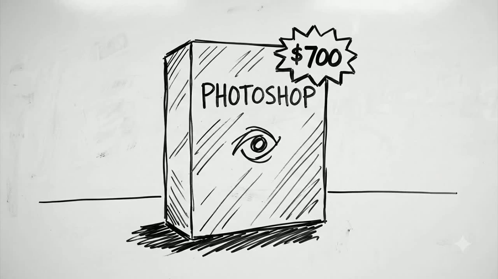 | p1: Black-and-white hand-drawn whiteboard sketch animation frame, 16:9 widescreen. Minimalist composition: on the right side of the frame, enormous hand-drawn marker digits "20.8" fill half the frame, drawn in thick bold black strokes with rough edges. Next to it in smaller marker writing: "MILLION MEMBERS". On the left side, a small sketch of a single gym building with a tiny stick figure at the door — intentionally comical scale contrast. A thin hand-drawn arrow connects the figure to the giant number. Light pencil-style hatching around the number for weight. The imbalance of the image is the point: huge number, tiny room. Pure black ink on white board, 16:9 widescreen, sketchy confident marker linework. |
| beat_2 | 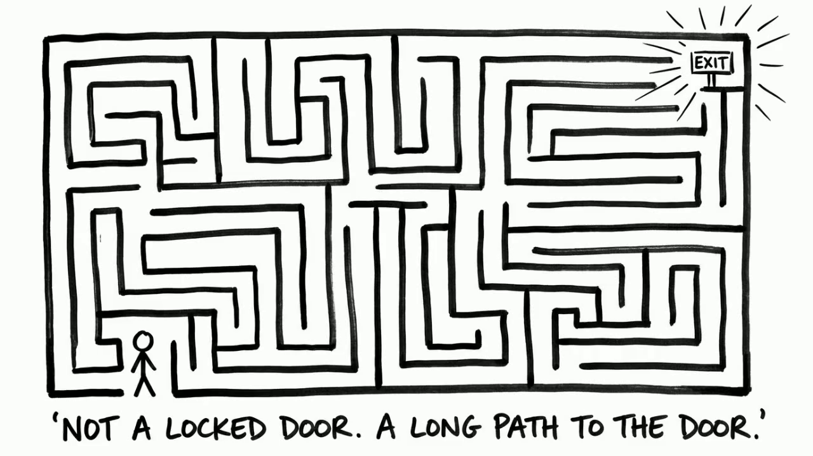 | p1: Black-and-white hand-drawn whiteboard sketch animation frame, 16:9 widescreen. Two enormous hand-drawn marker numbers on white board: "7,200" on the left, "350" on the right, both drawn in thick bold black strokes. Between them a hand-drawn equals sign tilted, then a small sketch of a gym building being crushed by a giant weight. Above the numbers, small marker labels: "MEMBERS / CLUB" and "MAX IN THE ROOM". A hand-drawn arrow points from 7,200 down to 350 with a big slash through the gap. Rough sketchy linework, hatch shading under the building. The arithmetic absurdity fills the frame. Pure black ink on white, 16:9 widescreen, documentary whiteboard style. |
| beat_2 | 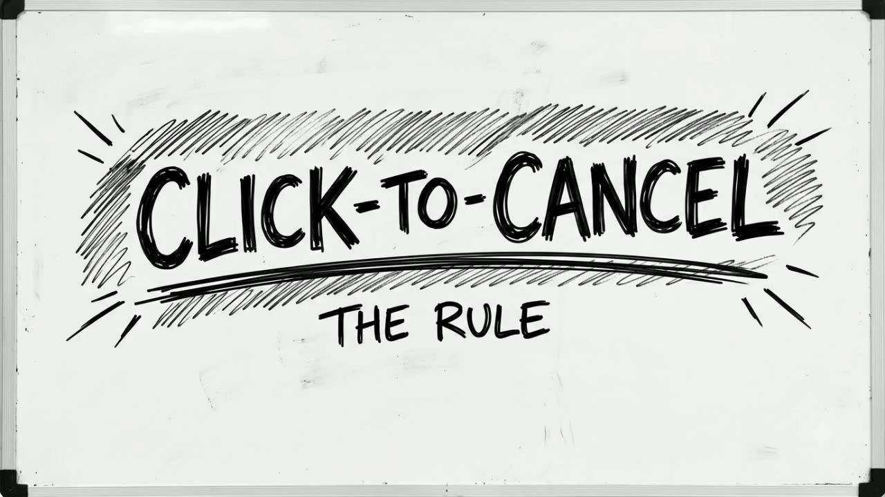 | p2: Black-and-white hand-drawn whiteboard sketch animation frame, 16:9 widescreen. Final beat payoff: the frame is dominated by hand-drawn marker digits "7,200 : 350" stacked like a fraction, drawn in huge thick black strokes. A hand-drawn red-pencil-style circle (black hatch ring) rings the ratio. Below, a simple line drawing of one stick figure alone on a treadmill inside a room outline, with small text: "ROOM FOR 350. 7,200 PAYING." The rest of the frame is clean white board. Bold graphic impact, minimal elements, strong hatching under the fraction. 16:9 widescreen, black ink on white, confident sketch lines, documentary whiteboard style. |
| beat_3 | 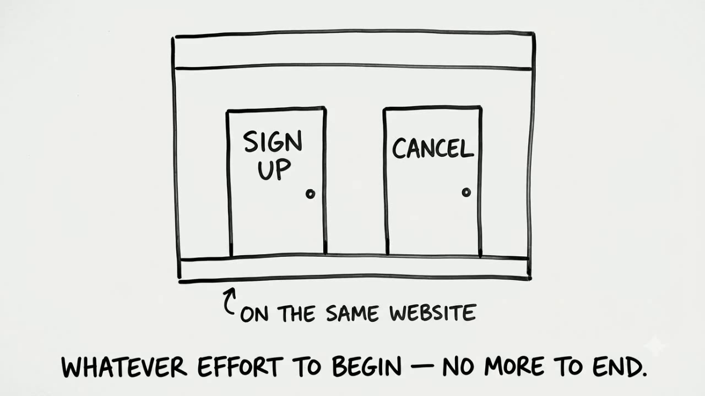 | p1: Black-and-white hand-drawn whiteboard sketch animation frame, 16:9 widescreen. A room outline drawn in black marker ink on white board, drawn as a simple rectangle. Stick figures are packed inside it wall to wall — dense clusters of heads, drawn in rapid repetitive strokes, overflowing the boundary lines. Above the room, a hand-drawn marker label: "4% OF MEMBERS". A hand-drawn fire marshal hat (classic captain's hat with badge) floats at the top corner with a small "X" beside it. Caption at the bottom in bold hand-lettered marker: "4% CLOSES THE CLUB". Heavy hatching in the crowded room for mass. 16:9 widescreen, black ink only, sketchy documentary whiteboard style. |
| beat_3 | 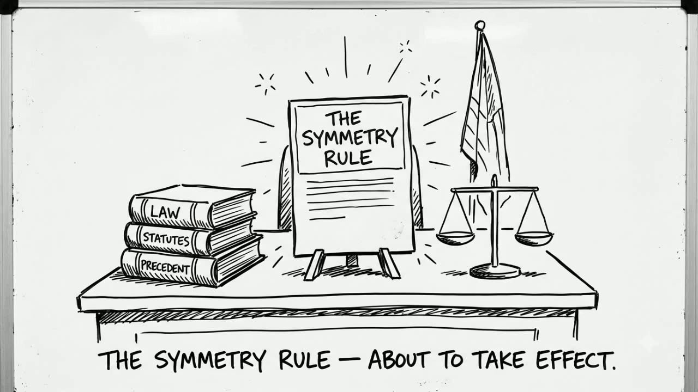 | p2: Black-and-white hand-drawn whiteboard sketch animation frame, 16:9 widescreen. A quiet, ominous whiteboard sketch: the empty gym again, wide shot, rows of machines, one light on. Superimposed over the top, drawn in huge bold marker digits with heavy hatching: "4%" and "10%", floating like warnings. A small hand-drawn stick figure at the bottom looks up at the numbers. At the very bottom, hand-lettered marker text: "THE BUSINESS ONLY WORKS IF YOU DON'T COME." The frame implies the entire thesis without stating the conclusion. 16:9 composition, black ink on white, loose confident strokes, documentary whiteboard style. |
| beat_4 | 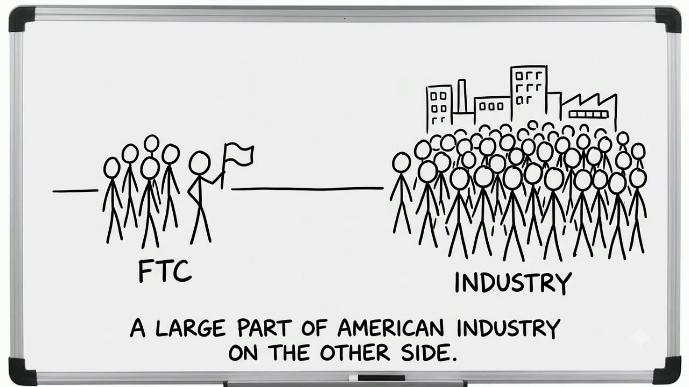 | p1: Black-and-white hand-drawn whiteboard sketch animation frame, 16:9 widescreen. A clean diagram drawn in black marker ink on white board: at the LEFT, a drawing of a crowded gym with a label "RISK: PEOPLE SHOWING UP". A thick hand-drawn arrow with heavy hatching points RIGHT to a drawing of an empty gym with one tiny stick figure, labeled "PRODUCT: PEOPLE NOT SHOWING UP". The arrow is drawn bold and heavy. Beneath, hand-lettered text: "THE COMPANY DOES NOT MANAGE THE RISK. IT SELLS IT." 16:9 widescreen composition, black ink on white, confident sketchy diagram style. |
| beat_5 | 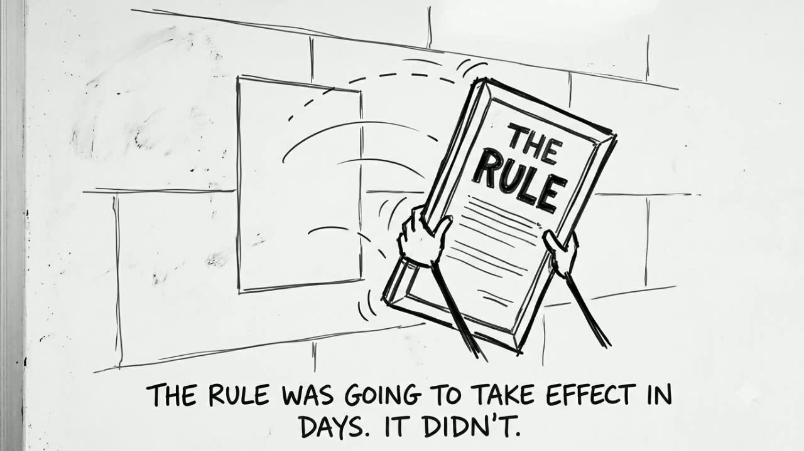 | p1: Black-and-white hand-drawn whiteboard sketch animation frame, 16:9 widescreen. The digits "$86" drawn in enormous bold black marker strokes on clean white board, centered in the frame, with rough edges and double-strokes for hand-drawn weight. Beneath, hand-lettered marker text: "WHAT AMERICANS GUESS THEY SPEND EVERY MONTH". A small doodled question mark floats beside the digits. Light hatching behind the number for emphasis. Clean minimal composition — the number is the whole story. 16:9 widescreen, black ink on white, documentary whiteboard sketch style. |
| beat_5 | 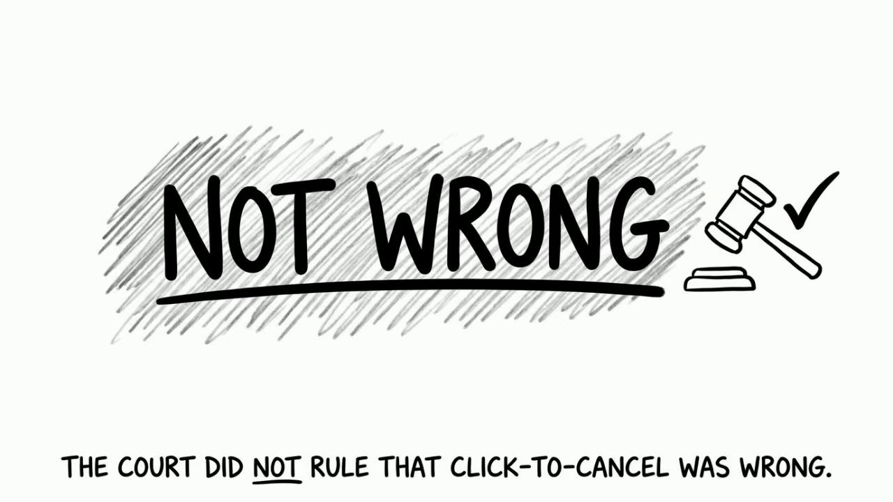 | p2: Black-and-white hand-drawn whiteboard sketch animation frame, 16:9 widescreen. A quiet whiteboard frame: the words "EIGHTY-SIX DOLLARS" drawn in bold hand-lettered marker at the top. Below, a stick figure sitting at a small desk with a phone and a bank statement sketch, chin resting on hand, drawn in a thinking pose. Around the figure, four small dashed circles with question marks. A hand-drawn arrow points to the bottom of the frame where a caption reads: "THEY ASKED PEOPLE TO GUESS. NEXT, THEY MADE THEM LOOK." — setting up the reveal. 16:9 widescreen, black ink on white, sketchy documentary style. |
| beat_6 | 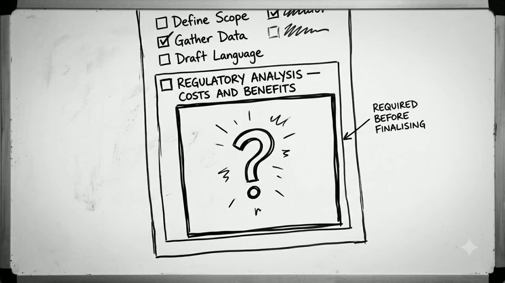 | p1: Black-and-white hand-drawn whiteboard sketch animation frame, 16:9 widescreen. A long paper receipt drawn in black marker ink on white board, unrolling from top to bottom, with hand-drawn line items: "STREAMING — $45", "MUSIC — $11", "CLOUD STORAGE — $10", "GYM — $10", "TRIP APP 2023 — $6", plus several more scribbled rows. At the bottom, a bold hand-drawn total line: "$219" in thick strokes, with a heavy underline. The receipt dominates the frame, slightly curled at the bottom with hatch shading. Caption beside: "THE REAL FIGURE". 16:9 widescreen, black ink on white, documentary sketch style. |
| beat_6 | 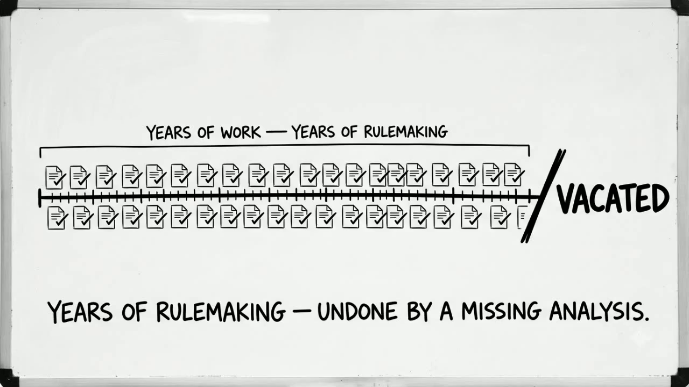 | p2: Black-and-white hand-drawn whiteboard sketch animation frame, 16:9 widescreen. A minimal whiteboard payoff: "$86" drawn in light thin strokes at the top-left with a small "GUESS" label; "$219" drawn in enormous heavy black marker strokes at the bottom-right with an "ITEMIZED" label. A bold hand-drawn diagonal arrow connects them, with hatch shading along it. Between the two numbers, small scrawled words: "STREAMING. MUSIC. CLOUD. THE GYM. THE APP FROM 2023." The frame holds on the gap between what people say and what people pay. 16:9, black ink on white, documentary whiteboard style. |
| beat_7 | 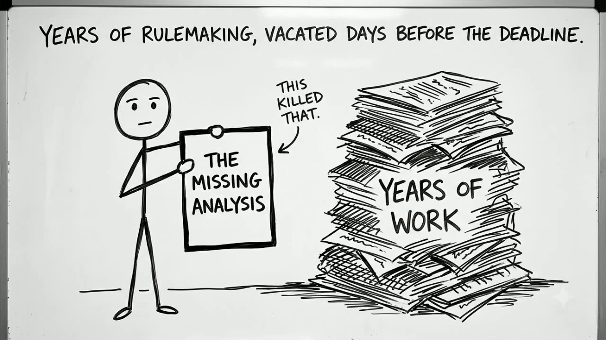 | p1: Black-and-white hand-drawn whiteboard sketch animation frame, 16:9 widescreen. A whiteboard sketch showing two tall columns drawn in black marker: the LEFT column labeled "$86 — GUESS" drawn with light hatching, the RIGHT column labeled "$219 — ITEMIZED" drawn taller with heavy hatching. Between their tops, a hand-drawn double-headed arrow marks the vertical gap, with a bold label in the middle: "+$133". A small dashed line extends from the $133 level with the note "EVERY MONTH". The gap is the subject of the frame. 16:9 widescreen, black ink on white, documentary diagram style. |
| beat_7 | 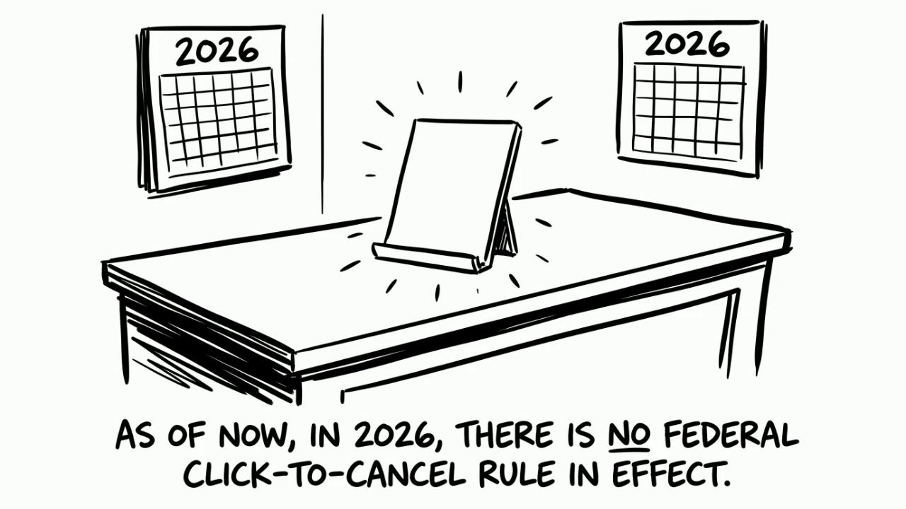 | p2: Black-and-white hand-drawn whiteboard sketch animation frame, 16:9 widescreen. A minimal whiteboard payoff frame: three hand-drawn numbers stacked vertically in the center — "$86" (light strokes), "$219" (medium strokes), and "+$133" (enormous heavy black strokes with hatching behind it). To the right, a small sketch of a person shrugging with palms up. Hand-lettered caption at the bottom: "THE GAP IS NOT AN ACCIDENT. SOMEBODY BUILT IT." — leading into the next beat. 16:9 composition, black ink on white, confident sketchy style. |
| beat_8 | 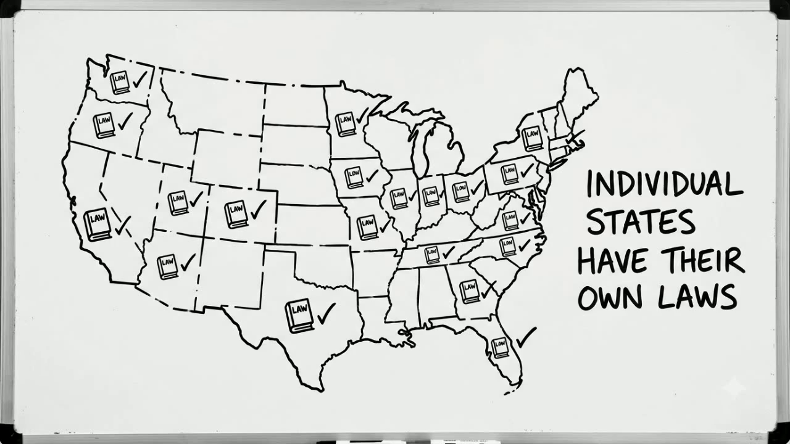 | p1: Black-and-white hand-drawn whiteboard sketch animation frame, 16:9 widescreen. A long horizontal timeline drawn in black marker ink on white board, spanning the frame, with tick marks and hand-drawn years: "1995", "2000", "2005", "2010", "2015", "2020", "2025". Along the line, small sketch icons rise — a gym, a software box, a streaming card, a phone — each drawn as tiny evolving structures. At the end of the line, a hand-drawn arrow points to a bold caption: "30 YEARS — BUILT IN PUBLIC". Hatching beneath the timeline. 16:9 widescreen, black ink only, documentary diagram style. |
| beat_8 | 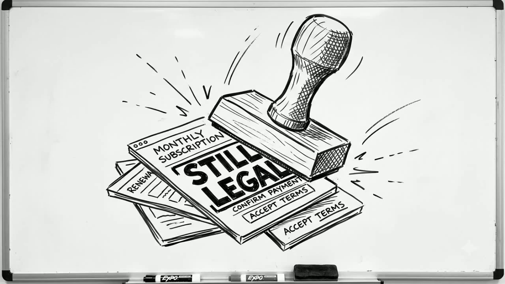 | p2: Black-and-white hand-drawn whiteboard sketch animation frame, 16:9 widescreen. A whiteboard transition frame: a bold hand-drawn arrow sweeping diagonally across the frame from top-left to bottom-right, with heavy hatching along its length. At the arrow's start, a small sketch of the gym with coins; at its end, a small sketch of a smartphone with a subscription checkmark. Hand-lettered text above the arrow: "THIS IS HOW THAT HAPPENED." Clean white space around the elements. 16:9, black ink only, confident sketchy transition style. |
| beat_9 | 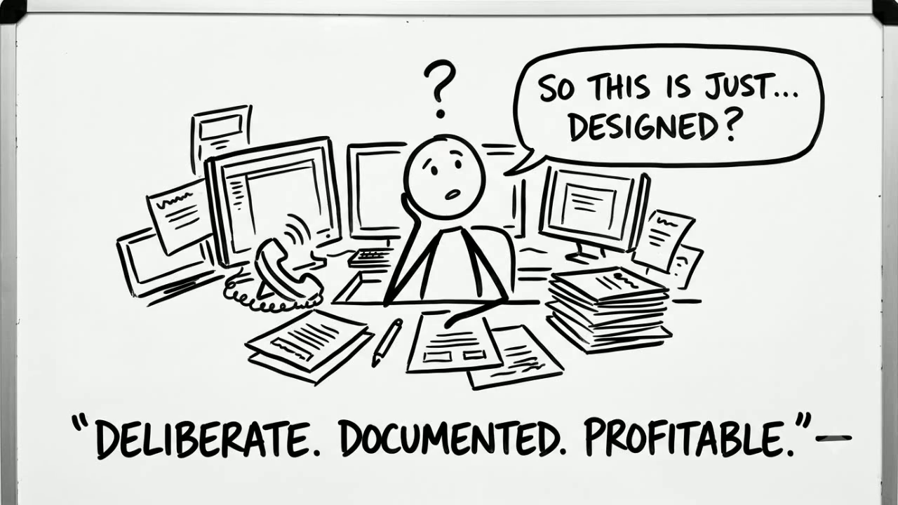 | p1: Black-and-white hand-drawn whiteboard sketch animation frame, 16:9 widescreen. A whiteboard sketch emphasizing the gym's physicality: a dumbbell rack, a bench press, a cable machine — drawn large in the foreground with detailed hatching on the metal and weight plates. Behind them, faintly, rows of machines recede. The frame shows that a gym is a *thing* you can walk around — unlike software. Small hand-drawn note: "A PRODUCT YOU CAN SEE AND TOUCH." 16:9 widescreen, black ink on white, documentary sketch style. |
| beat_10 | 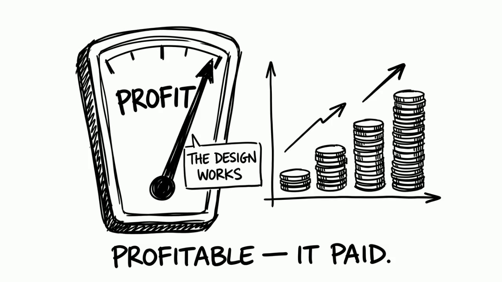 | p1: Black-and-white hand-drawn whiteboard sketch animation frame, 16:9 widescreen. A whiteboard chart drawn in black marker ink: a horizontal axis labeled "PEOPLE", a vertical axis labeled "COST". A perfectly flat hand-drawn line runs across the middle of the chart, labeled "COST TO RUN THE GYM". Small tick figures along the bottom axis: one figure, then ten, then a crowd — and the line stays flat. A hand-drawn note with an arrow: "THE SAME. ALWAYS THE SAME." 16:9 widescreen, black ink on white, documentary chart style. |
| beat_10 | 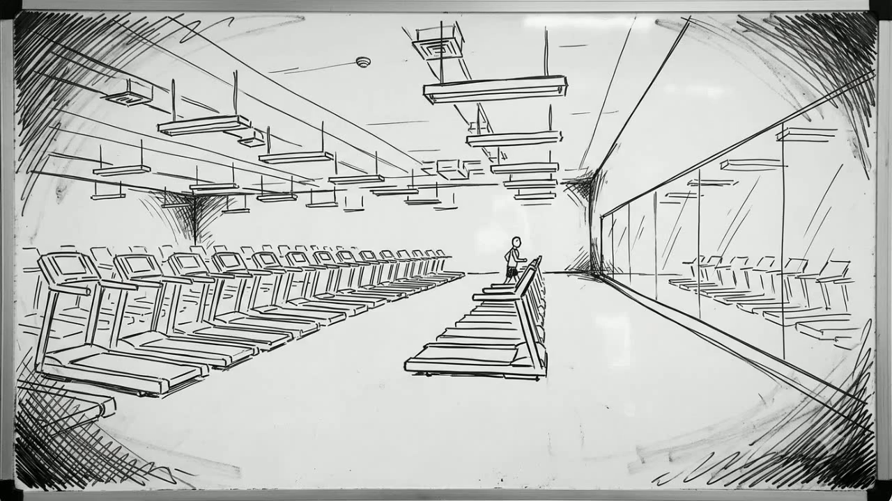 | p2: Black-and-white hand-drawn whiteboard sketch animation frame, 16:9 widescreen. A whiteboard payoff frame: a hand-drawn seesaw or balance — on one side, a flat stack of cost blocks labeled "FIXED COSTS"; on the other, an arrow pointing up labeled "EVERY EXTRA MEMBER". Beneath the seesaw, hand-lettered marker text: "COSTS ARE FIXED. MEMBERS ARE VARIABLE. WATCH WHAT THE EXTRA MEMBER DOES." The frame sets up the next beat — pure profit until they turn up. 16:9, black ink on white, confident sketchy style. |
| beat_11 | 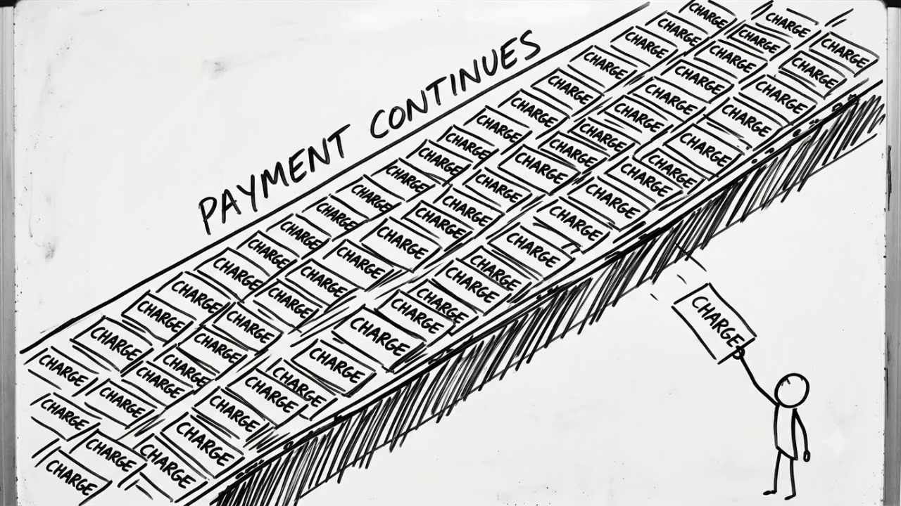 | p1: Black-and-white hand-drawn whiteboard sketch animation frame, 16:9 widescreen. A whiteboard sketch: a single stick figure walking into a simple gym outline. Above the figure, a hand-drawn arrow pointing down into a pile of coins labeled "PURE PROFIT". The coins are drawn as small circles with hatching. A small label on the figure: "NEW MEMBER". Caption: "EVERY EXTRA MEMBER IS ALMOST PURE PROFIT." 16:9 widescreen, black marker ink on white, documentary sketch style. |
| beat_11 | 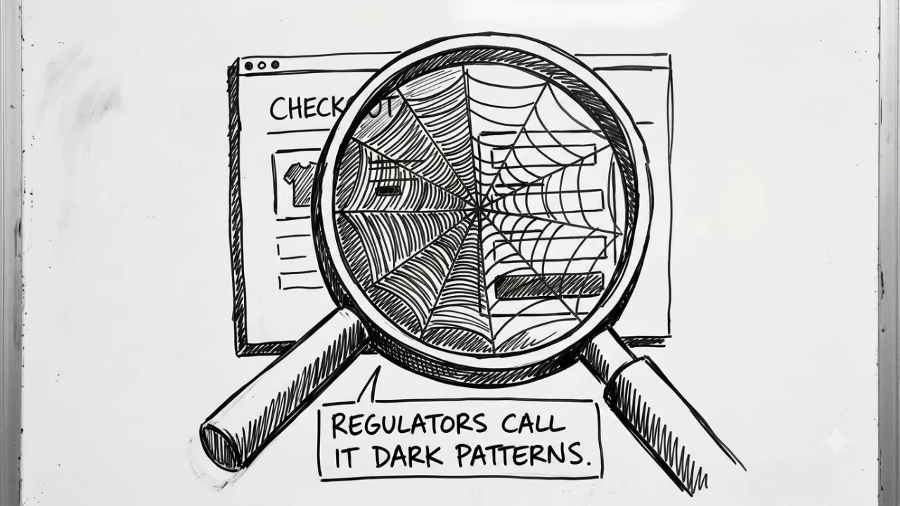 | p2: Black-and-white hand-drawn whiteboard sketch animation frame, 16:9 widescreen. A whiteboard payoff frame: the empty gym again drawn in the background, faint. In the foreground, a hand-drawn equation: "MEMBER WHO PAYS − MEMBER WHO COMES = PROFIT". Below it, a second line: "MEMBER WHO COMES = COST". A large hand-drawn question mark floats over the equation, with a small stick figure thinking. Caption: "SO WHO SHOULD THEY WANT IN THE DOOR?" — leading to the ideal customer. 16:9, black marker ink on white, sketchy style. |
| beat_12 | 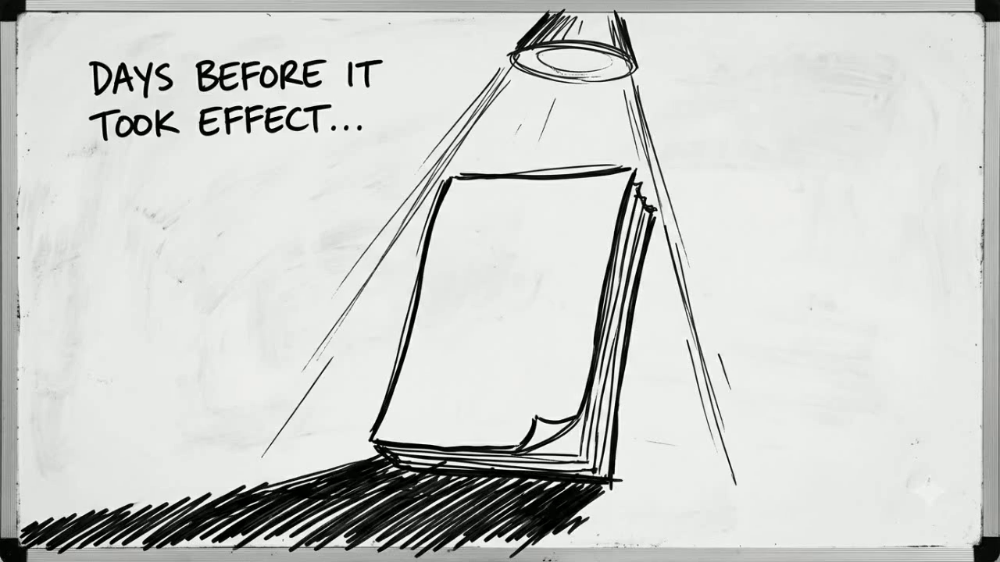 | p1: Black-and-white hand-drawn whiteboard sketch animation frame, 16:9 widescreen. A whiteboard sketch of a gym front desk seen from the staff side: a stick-figure staff member giving a big thumbs up, drawn with a smiling simple face. Through the window, a customer figure walks away down the street, never entering. A hand-drawn speech bubble from the staff: "PERFECT." Caption at the bottom: "THE STAFF KNOW THE IDEAL CUSTOMER BY SIGHT." 16:9 widescreen, black ink only, sketchy documentary style. |
| beat_13 | 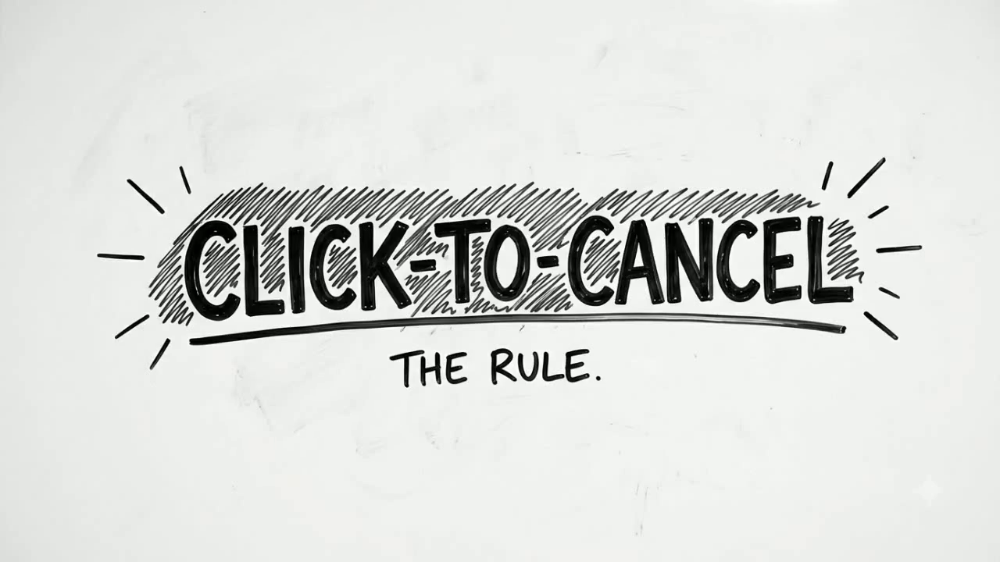 | p1: Black-and-white hand-drawn whiteboard sketch animation frame, 16:9 widescreen. A whiteboard sketch: a large pie chart drawn in bold black marker, split into two segments — a big segment (two-thirds) filled with heavy hatch shading, and a smaller segment left white. A hand-drawn arrow points to the big segment with a label: "UP TO 2/3 UNUSED". The white segment labeled "USED". Below, small text: "INDUSTRY ESTIMATE". 16:9 widescreen, black ink on white, documentary chart style. |
| beat_13 | 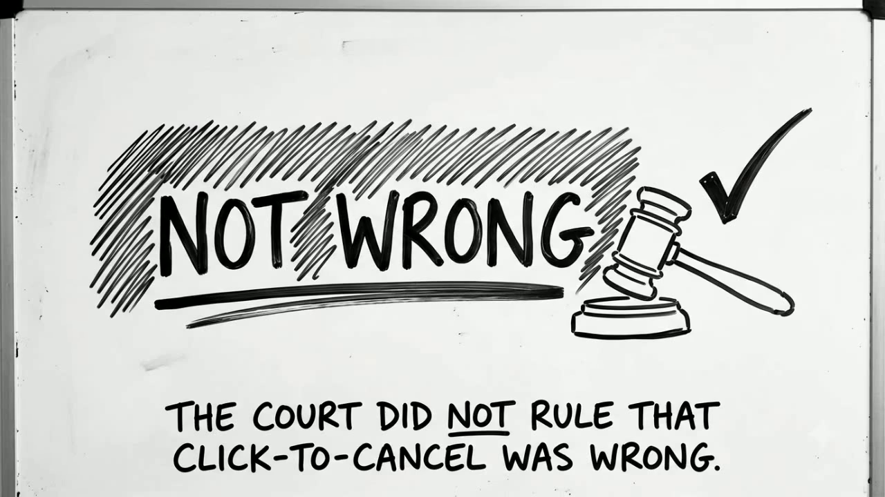 | p2: Black-and-white hand-drawn whiteboard sketch animation frame, 16:9 widescreen. A whiteboard payoff card: enormous hand-drawn marker digits "2/3" in the center of the frame with heavy hatching behind them. Beneath, smaller text: "OF GYM MEMBERSHIPS GO ESSENTIALLY UNUSED". In the corner, a small sketch of a calendar with January circled and a tiny "SOON..." note. The frame is a clean stat reveal — big number, quiet doom. 16:9 widescreen, black ink only, confident sketchy style. |
| beat_14 | 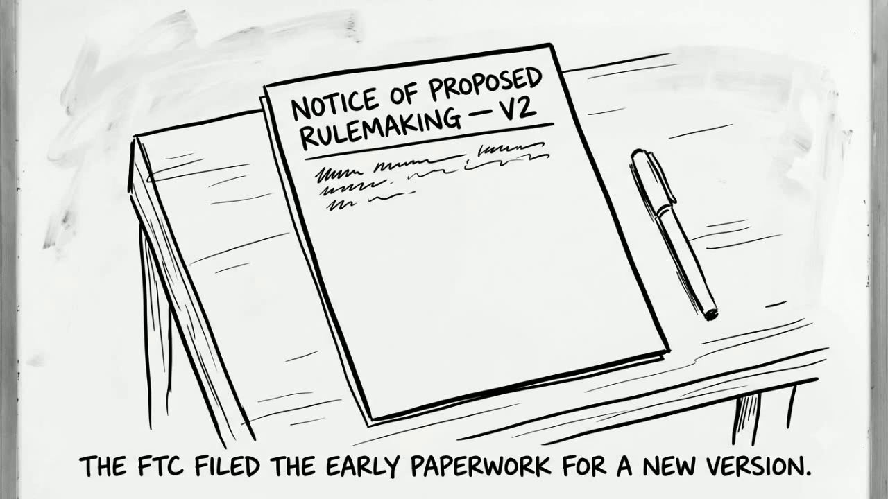 | p1: Black-and-white hand-drawn whiteboard sketch animation frame, 16:9 widescreen. A near-black whiteboard frame: the entire background filled with heavy cross-hatching (drawn darkness), and in the center, the single word "BREAKAGE" emerging in bold white-space strokes — drawn as thick black letters with the board's white showing through, radiating thin light lines behind it. The word is the only element. 16:9 widescreen, black marker ink, high-contrast reveal sketch style. |
| beat_15 | 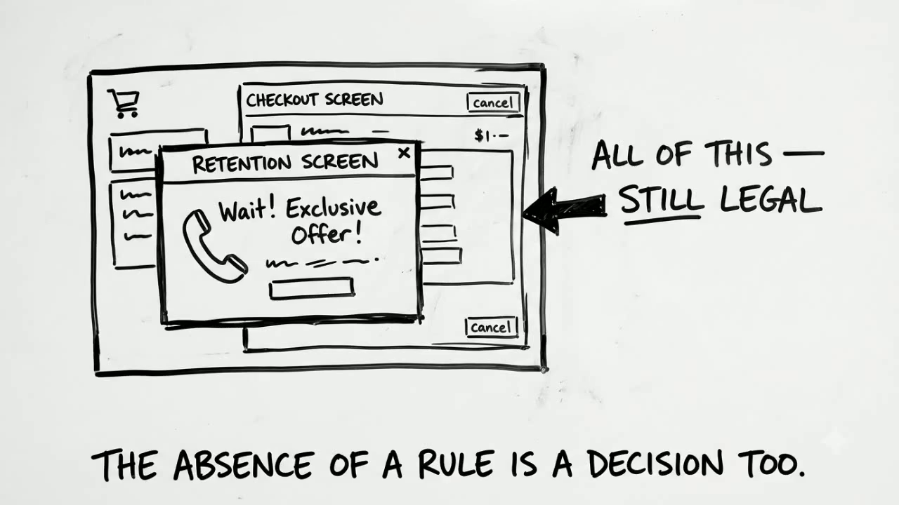 | p1: Black-and-white hand-drawn whiteboard sketch animation frame, 16:9 widescreen. A whiteboard sketch: three hand-drawn icons in a row across the frame — a gift card with a ribbon (drawn as a rectangle with a bow), an airplane wing with a small wing icon (miles), and a store receipt with a folded coupon (store credit). Each icon drawn in bold black marker with light hatching. Below each, small labels: "GIFT CARDS", "EXPIRED MILES", "STORE CREDIT". Caption: "BREAKAGE'S ORIGINAL FAMILIES." 16:9 widescreen, black ink on white, diagram sketch style. |
| beat_15 | 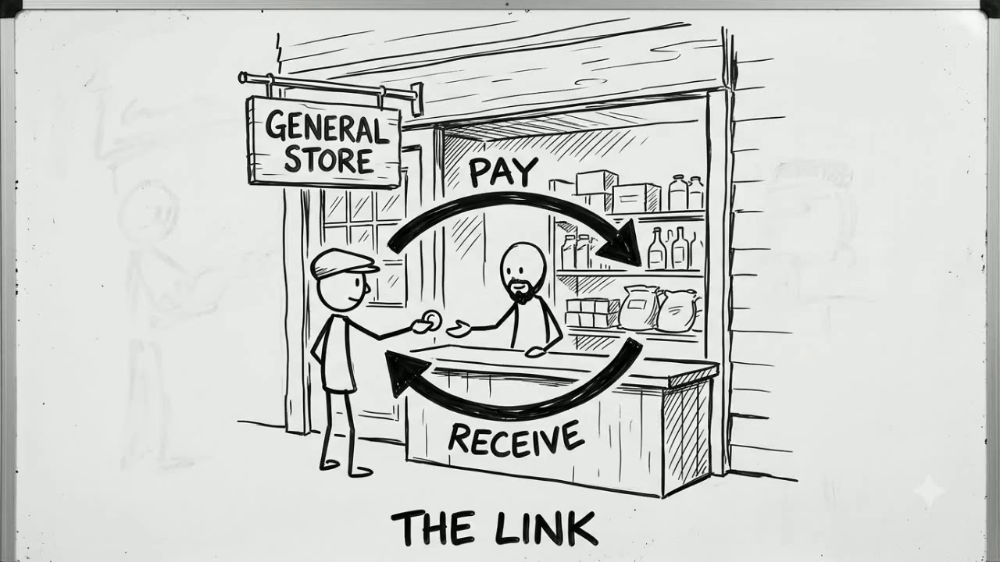 | p2: Black-and-white hand-drawn whiteboard sketch animation frame, 16:9 widescreen. A whiteboard sketch: on the LEFT, a gift card with a small "1×" label and a checkmark — fine. On the RIGHT, a calendar with a big hand-drawn "?" and a small coin repeating month after month — drawn as repeated coin icons down the page edge. A bold hand-drawn arrow connects the gift card to the calendar, labeled: "WHAT IF IT BROKE EVERY MONTH?" The frame sets up the next beat. 16:9 widescreen, black marker ink on white, sketchy documentary style. |
| beat_16 | 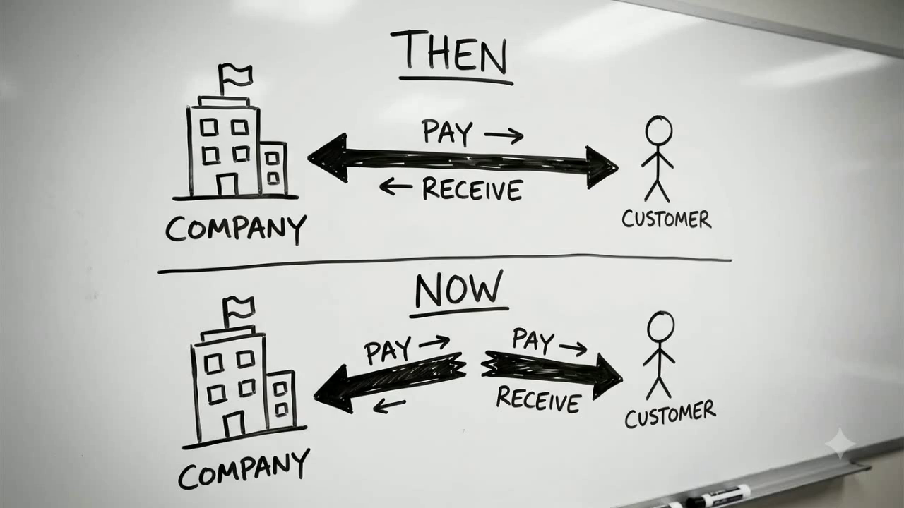 | p1: Black-and-white hand-drawn whiteboard sketch animation frame, 16:9 widescreen. A whiteboard sketch: a hand-drawn chain — individual chain links drawn as elongated ovals — stretching diagonally across the frame. Each link has a small month written inside: "JAN", "FEB", "MAR", "APR"... continuing off-frame. The first link is drawn connected to a gift card; the chain extends without end. Hatch shading on the links for metal depth. Caption: "EVERY MONTH, FOREVER." 16:9 widescreen, black marker ink on white, sketchy documentary style. |
| beat_17 | 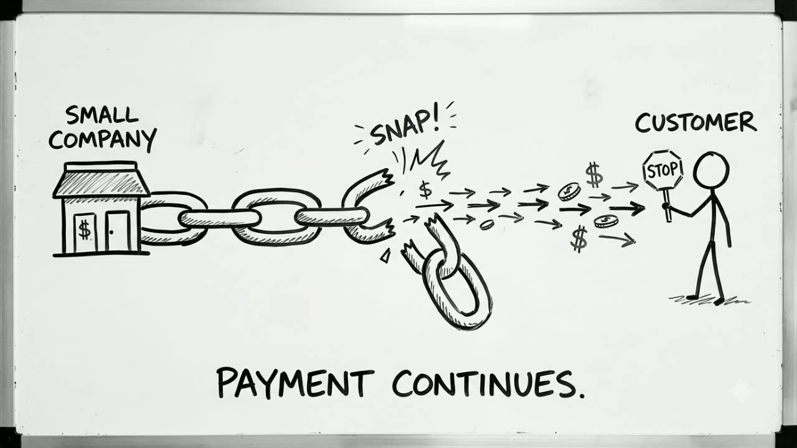 | p1: Black-and-white hand-drawn whiteboard sketch animation frame, 16:9 widescreen. A whiteboard sketch of a 1990s gym storefront drawn in bold black marker: a boxy building with a large sign reading "BALLY TOTAL FITNESS" in hand-lettered retro-style marker text, neon-tube-style letters drawn with double outlines, a striped awning, and a glass door. The street is simple: a curb, a lamppost, one car drawn boxy and vintage. Hatching on the building shadow. The frame reads clearly as the 90s. 16:9 widescreen, black ink on white, documentary sketch style. |
| beat_17 | 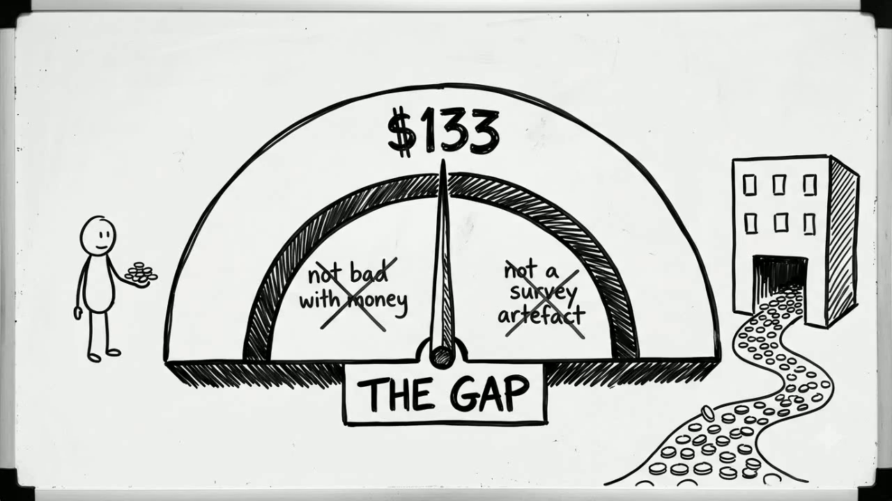 | p2: Black-and-white hand-drawn whiteboard sketch animation frame, 16:9 widescreen. A whiteboard sketch: a hand-drawn chain wrapping around a stick-figure customer — links encircling the figure's body, drawn with hatching. A padlock hangs from the chain with "3 YEARS" written in marker on it. The customer holds the pen from the sign-up, looking down at the chain. Caption: "A FEW MONTHS OF ACCESS. THREE YEARS OF COMMITMENT." 16:9, black ink only, sketchy documentary style. |
| beat_17 | 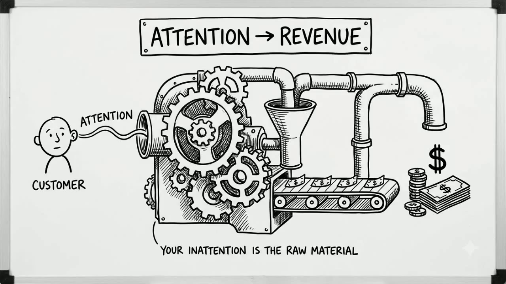 | p3: Black-and-white hand-drawn whiteboard sketch animation frame, 16:9 widescreen. A whiteboard sketch: a hand-drawn letter (bill) with a "FINAL NOTICE" stamp, and behind it a stack of identical previous bills, each stamped "UNPAID → COLLECTIONS". A small collections-agency icon (building with a phone) sits in the corner. The bills form a tower with hatching. Caption: "THE OLD MODEL KEPT REVENUE WITH A FIST." 16:9 widescreen, black marker ink on white, documentary sketch style. |
| beat_17 | 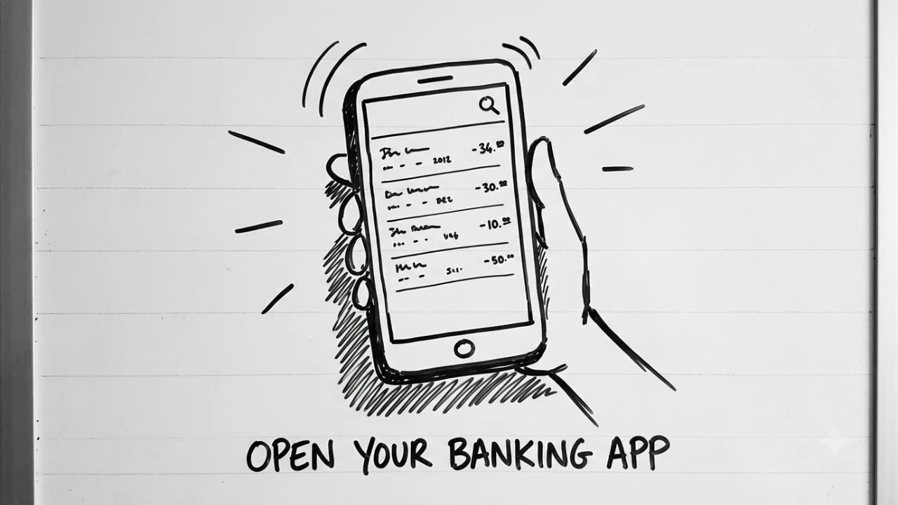 | p4: Black-and-white hand-drawn whiteboard sketch animation frame, 16:9 widescreen. A whiteboard sketch: a factory assembly line (conveyor with rollers) carrying gym membership contracts, with stick-figure workers stamping each with "3 YRS". At the end of the line, a tower of stamped contracts. A small sign hangs over the line: "INDUSTRIALISING BREAKAGE — VERSION 1.0". The frame shows the model being mass-produced. 16:9, black ink on white, sketchy documentary style. |
| beat_18 | 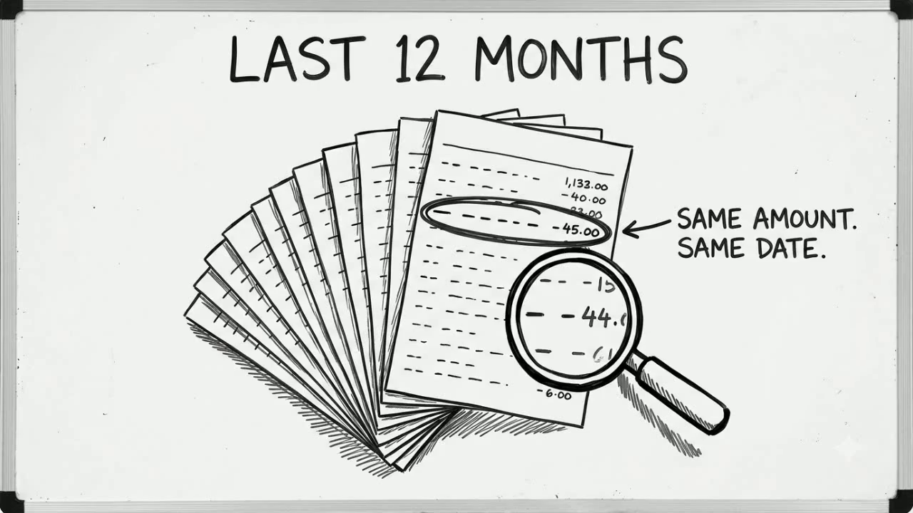 | p1: Black-and-white hand-drawn whiteboard sketch animation frame, 16:9 widescreen. A whiteboard sketch: the digits "1994" drawn in huge bold black marker strokes in the center, with hatching behind them. Above, smaller hand-drawn text: "FEDERAL REGULATORS". Below, a small sketch of a government building with columns. Radiating thin lines around the date (emphasis). The frame is a clean historical marker. 16:9 widescreen, black ink on white, documentary sketch style. |
| beat_18 | 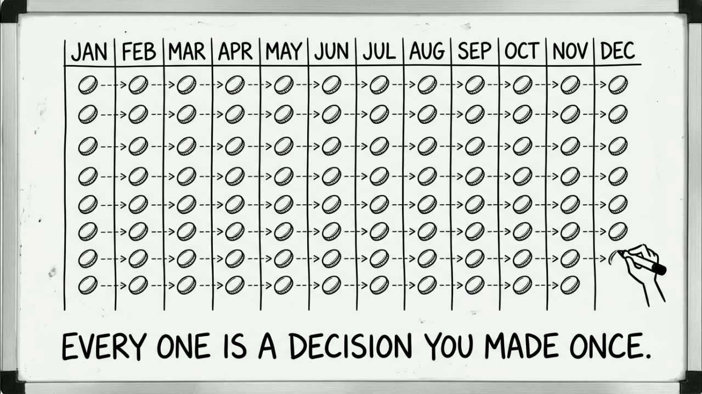 | p2: Black-and-white hand-drawn whiteboard sketch animation frame, 16:9 widescreen. A whiteboard sketch: a customer at a desk with a cancellation form, and behind the desk, a maze of small arrows and doors — drawn as a labyrinth sketch with a tiny "EXIT" sign far in the distance. The form has dense scribbled fine print. Caption: "CANCELLATION WAS HARDER THAN IT APPEARED." The labyrinth dominates. 16:9 widescreen, black marker ink on white, documentary style. |
| beat_18 | 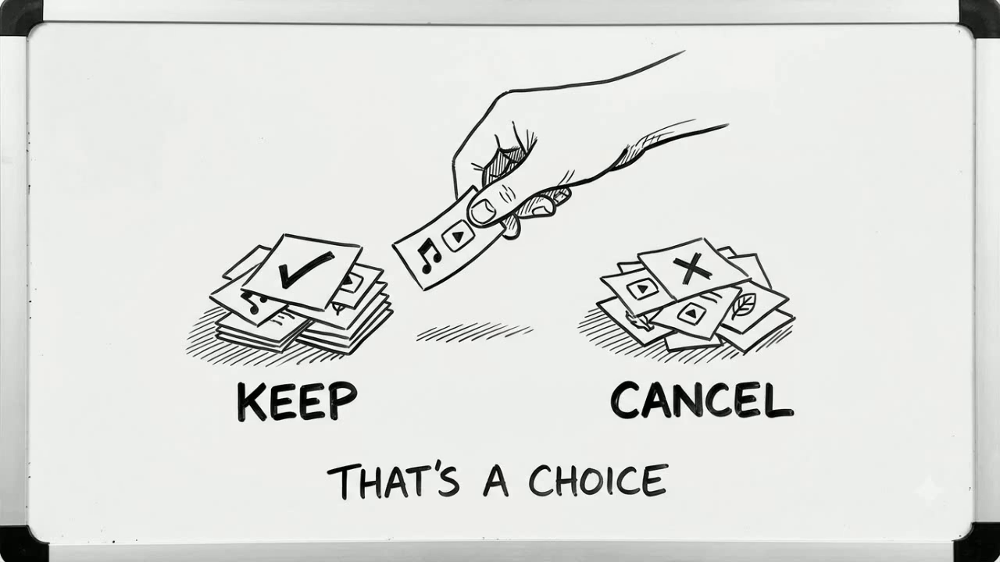 | p3: Black-and-white hand-drawn whiteboard sketch animation frame, 16:9 widescreen. A whiteboard sketch: a hand-drawn flow diagram with three boxes connected by arrows: "INVESTIGATION" → "SETTLEMENT" → "PENALTY + REFUNDS". A small note beneath the last box: "NO ADMISSION". A stick figure observes the diagram with a hand on chin. Caption: "THE PATTERN THAT REPEATS THROUGH THE WHOLE STORY." 16:9, black ink on white, documentary diagram style. |
| beat_19 | 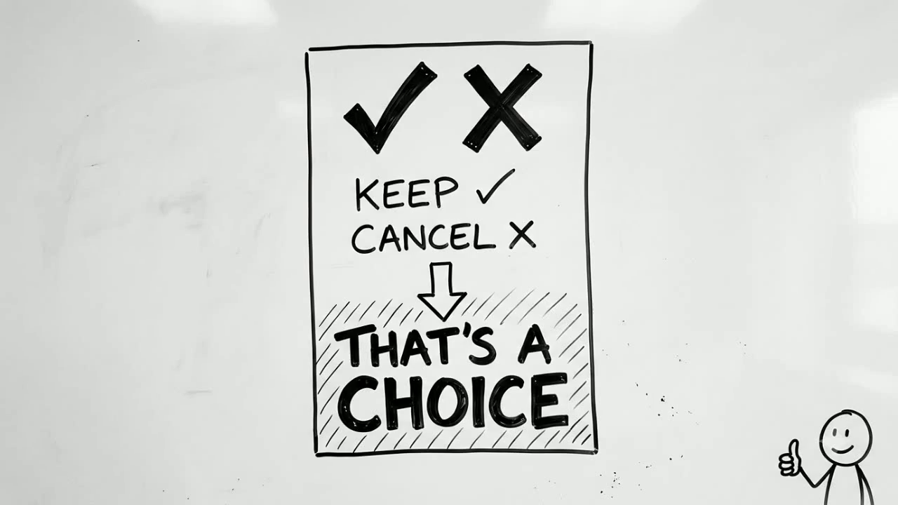 | p1: Black-and-white hand-drawn whiteboard sketch animation frame, 16:9 widescreen. A whiteboard sketch: a towering stack of complaint letters — individual envelopes drawn as rectangles with scribbled addresses, piled high with hatching. At the top, a hand-drawn banner: "600+ CONSUMER COMPLAINTS". A small stick figure stands beside the stack for scale, tiny. The stack dwarfs the figure. 16:9 widescreen, black ink on white, documentary sketch style. |
| beat_19 | 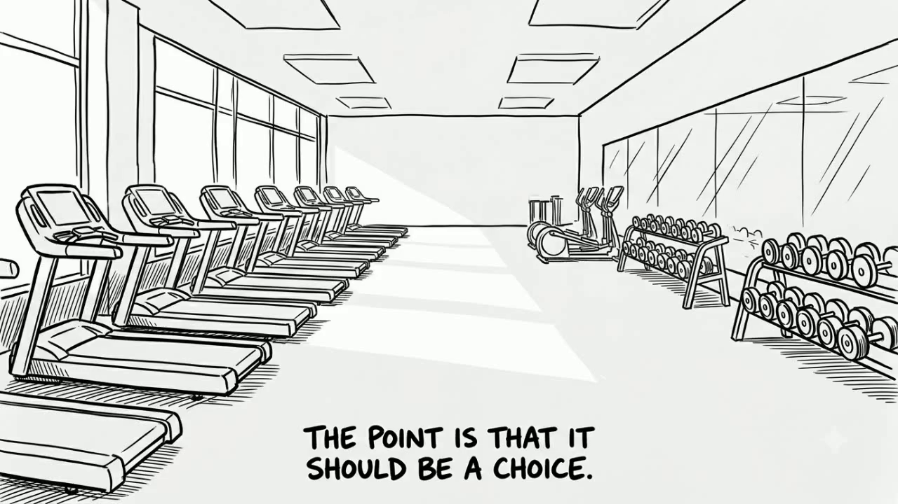 | p2: Black-and-white hand-drawn whiteboard sketch animation frame, 16:9 widescreen. A whiteboard sketch: a split diagram — LEFT, a newspaper ad sketch with a big hand-drawn "SHORT-TERM ACCESS" headline and a smiling figure; RIGHT, the same figure now wrapped in a chain labeled "3 YEARS". Between them, a bold hand-drawn arrow with the label "DELIVERED". Caption beneath: "WHAT THEY PROMISED. WHAT THEY DELIVERED." 16:9, black ink on white, diagram style. |
| beat_19 | 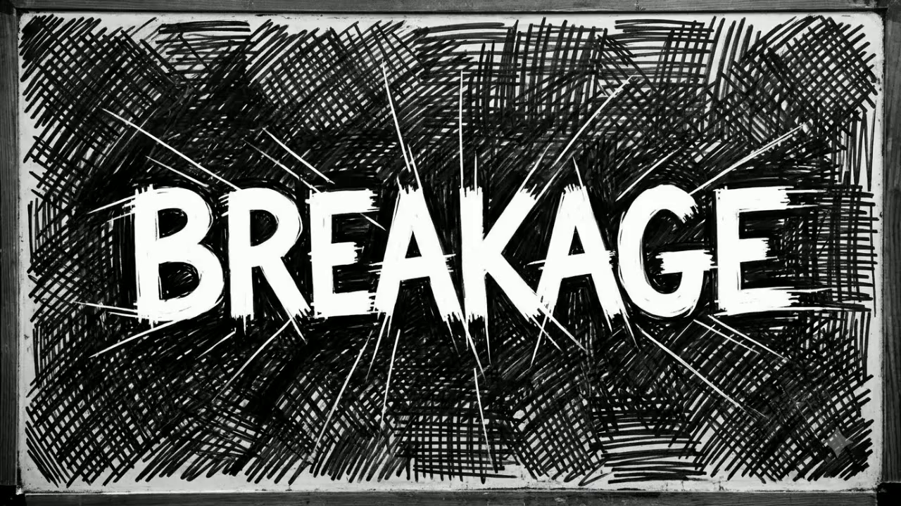 | p3: Black-and-white hand-drawn whiteboard sketch animation frame, 16:9 widescreen. A whiteboard sketch: a hand-drawn clipboard with a title: "REFORMS — BALLY SETTLEMENT", and three checkbox lines with small icons: "GRACE PERIOD" (a small clock), "CLEARER CANCELLATION PROCEDURES" (a form icon), "PRO-RATA REFUNDS" (a coin icon). Each box has a checkmark drawn in bold. The clipboard is held by a stick-figure hand. 16:9 widescreen, black marker ink on white, diagram style. |
| beat_20 | 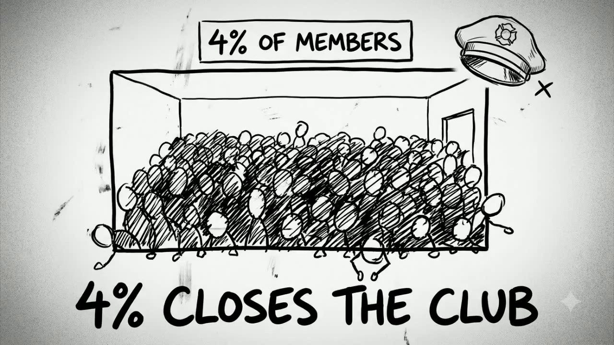 | p2: Black-and-white hand-drawn whiteboard sketch animation frame, 16:9 widescreen. A whiteboard sketch: a single document page standing upright in the frame, drawn bold — with a danger vibe: radiating warning lines behind it, and a small hand-drawn label on it: "LEGAL OBLIGATION". Beneath the document, a growing shadow drawn as dark hatching — the shadow is labeled "COMPLAINTS → ATTORNEYS GENERAL → SETTLEMENTS". The document creates a chain reaction. 16:9, black ink only, sketchy documentary style. |
| beat_20 |  | p3: Black-and-white hand-drawn whiteboard sketch animation frame, 16:9 widescreen. A whiteboard sketch: a stick figure holding up a contract document before a small crowd of stick figures (the public), drawn with a determined posture. The crowd leans in. Above, a small newspaper sketch with a headline: "GYM CHAIN ACCUSED". The document is the figure's power. Caption: "ONE DOCUMENT. AN ARMY OF SYMPATHY." 16:9 widescreen, black ink on white, sketchy documentary style. |
| beat_20 | 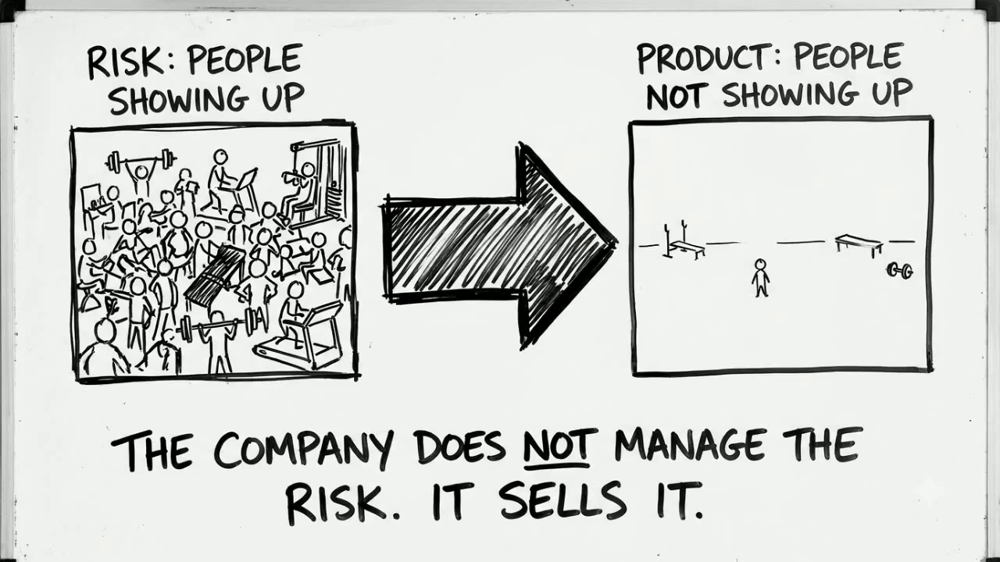 | p4: Black-and-white hand-drawn whiteboard sketch animation frame, 16:9 widescreen. A whiteboard payoff frame: in the center, a stick figure holding a document high above their head, drawn with radiating thin lines (empowered). The document has "3 YEARS" in bold. Around the figure, three small icons in circles: a complaint letter, a government building, a settlement paper. Caption at the bottom: "THE CONTRACT CREATED THE VICTIM. THE NEXT MODEL REMOVED THE CONTRACT." 16:9, black ink only, sketchy style. |
| beat_21 | 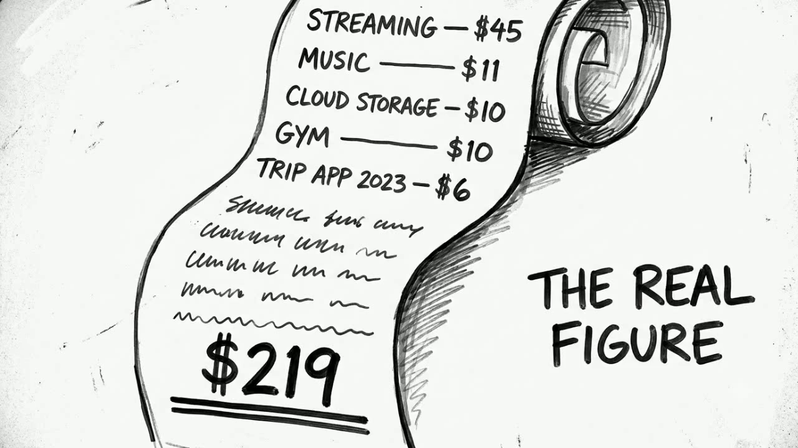 | p1: Black-and-white hand-drawn whiteboard sketch animation frame, 16:9 widescreen. A whiteboard sketch: a machine diagram — a contract entering a machine (drawn as a box with gears), and out the other side, a stream of complaint envelopes, then a gavel, then settlement papers. Each stage drawn as an icon. A hand-drawn label on the machine: "PROBLEM ENGINE". Caption: "A CONTRACT IS A COMPLAINT FACTORY." 16:9 widescreen, black ink on white, diagram style. |
| beat_22 | 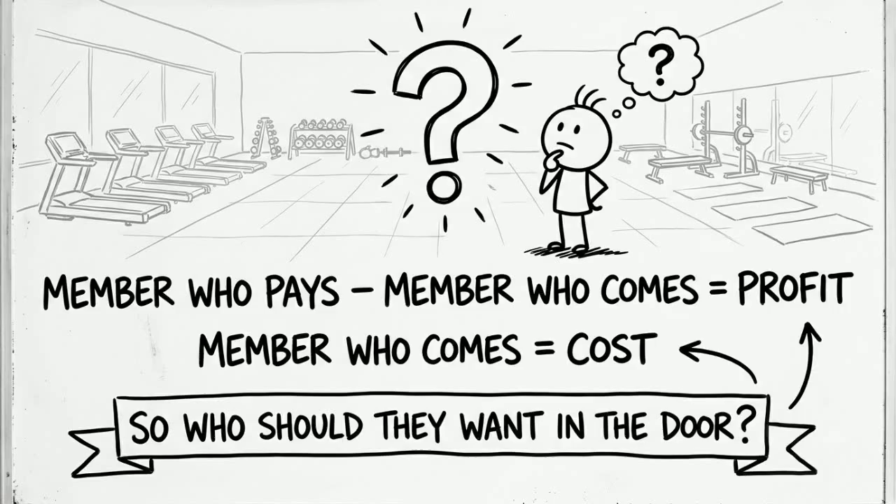 | p1: Black-and-white hand-drawn whiteboard sketch animation frame, 16:9 widescreen. A whiteboard sketch of a bright modern gym storefront drawn in bold black marker: a clean boxy building with big glass windows, a simple bold sign, warm light radiating from the windows (thin radiating lines), an open door. The feeling is welcoming and cheap — unthreatening. A small stick figure walks in freely. Caption: "ON PAPER, THE MOST CONSUMER-FRIENDLY GYM IN AMERICA." 16:9 widescreen, black ink on white, documentary sketch style. |
| beat_22 | 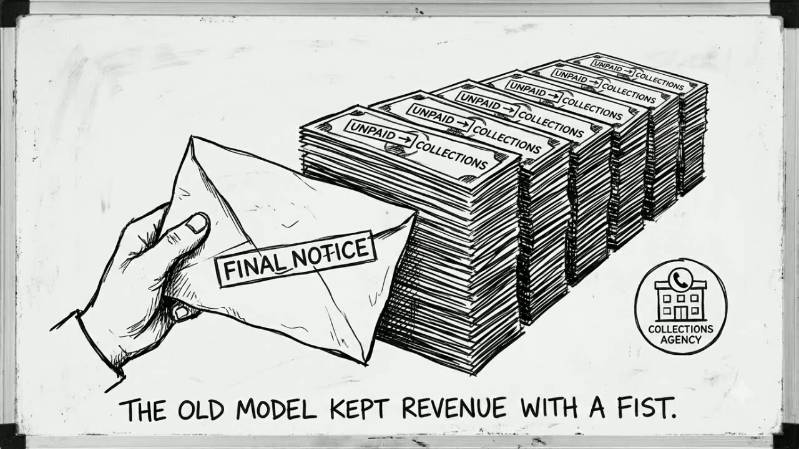 | p2: Black-and-white hand-drawn whiteboard sketch animation frame, 16:9 widescreen. A whiteboard sketch: a two-panel comparison. LEFT panel: "BALLY" — a labyrinth drawing with a chain and a document, labeled "THE TRAP". RIGHT panel: "PLANET FITNESS" — a simple door with a hand turning a knob, labeled "THE EXIT". A bold hand-drawn arrow between them. Caption: "ONE MADE LEAVING A FIGHT. ONE MADE IT A DOOR." 16:9 widescreen, black ink on white, diagram style. |
| beat_22 | 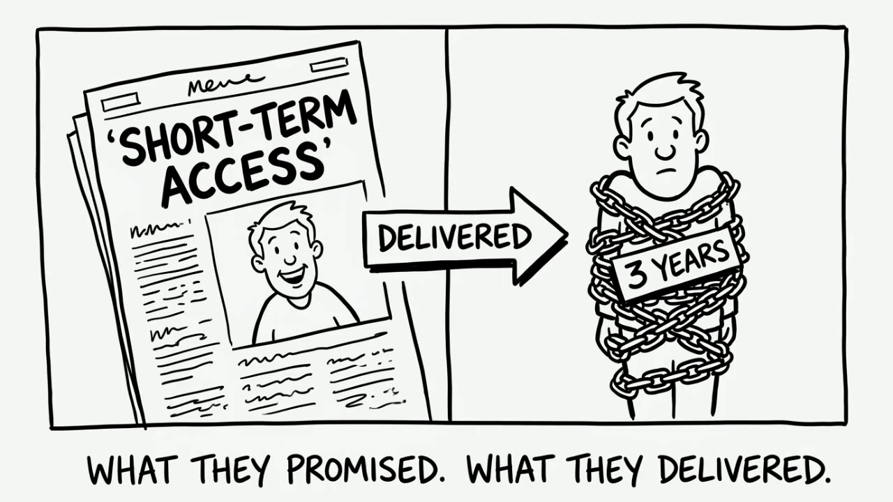 | p3: Black-and-white hand-drawn whiteboard sketch animation frame, 16:9 widescreen. A whiteboard payoff frame: the word "FRIENDLY" drawn in bold marker with a circle around it, and beneath it a hand-drawn equation: "CONSUMER-FRIENDLY ≠ PROFIT-KILLING". Small icons: a smiling customer with coins flowing to a gym, and a chain broken on the ground. Caption: "THE MOST CONSUMER-FRIENDLY GYM IN AMERICA — EXACTLY THE POINT." 16:9, black ink only, confident sketchy style. |
| beat_23 | 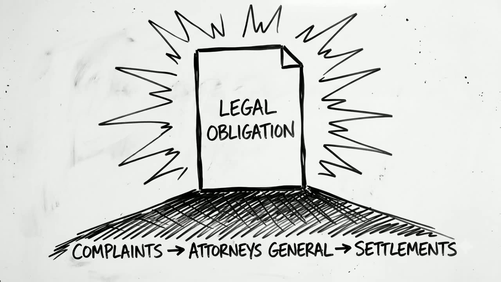 | p1: Black-and-white hand-drawn whiteboard sketch animation frame, 16:9 widescreen. A whiteboard sketch: on the LEFT, a padlocked cage with a chain (the old model — "TRAP"), crossed out with a bold slash. On the RIGHT, a small stick figure dragging a heavy block labeled "EFFORT" up a slight hill, drawn with effort lines. A hand-drawn arrow from left to right: "INSTEAD OF A TRAP, MAKE LEAVING HEAVY." 16:9 widescreen, black ink on white, diagram style. |
| beat_24 |  | p1: Black-and-white hand-drawn whiteboard sketch animation frame, 16:9 widescreen. A whiteboard sketch: two hand-drawn numbers side by side — "$99" drawn big and bold with hatching behind it, and "$10" drawn small and light. A hand-drawn eye icon looks at the $99 (notice) and an eye with a line through it looks at the $10 (ignored). Caption: "THE PRICE IS THE STRATEGY." 16:9 widescreen, black ink on white, documentary sketch style. |
| beat_24 | 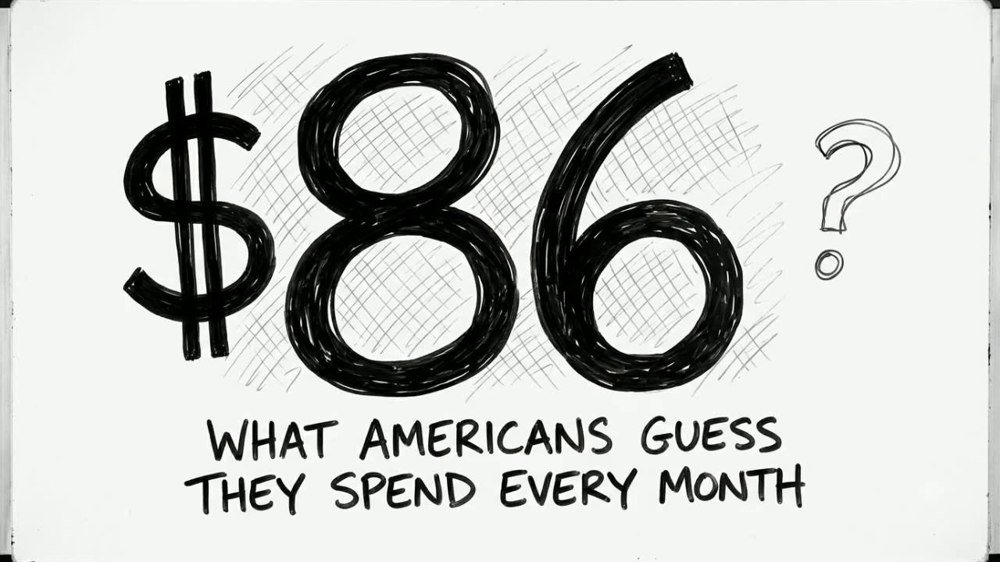 | p2: Black-and-white hand-drawn whiteboard sketch animation frame, 16:9 widescreen. A whiteboard sketch: a bank statement page with rows of charges — most rows small scribbles — and one line drawn in bold with a heavy circle around it: "$99.00 — GYM". A stick-figure finger taps it. The charge sits there "looking expensive". Hatch shading on the statement. 16:9 widescreen, black ink on white, documentary style. |
| beat_24 | 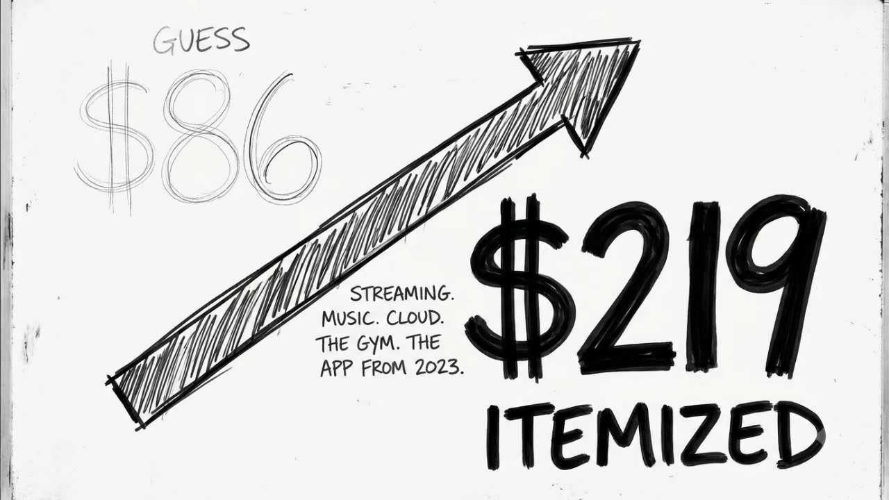 | p3: Black-and-white hand-drawn whiteboard sketch animation frame, 16:9 widescreen. A whiteboard sketch: a stick figure searching frantically — drawn with motion lines and a magnifying glass — in front of a phone, a laptop, and an old tablet, each with a small "?" above. A speech bubble: "WHICH PHONE WAS THE LOGIN ON?" Doodle arrows zigzag between devices. Caption: "FIND THE LOGIN YOU SET UP ON A DIFFERENT PHONE." 16:9 widescreen, black marker ink on white, sketchy documentary style. |
| beat_24 | 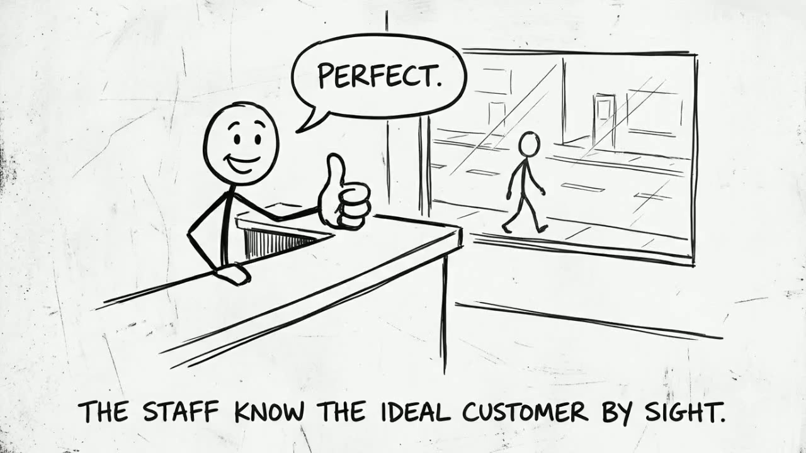 | p4: Black-and-white hand-drawn whiteboard sketch animation frame, 16:9 widescreen. A whiteboard sketch: a clock face with a section of the dial hatched and labeled "20 MINUTES". Below the clock, a small figure at a desk scrolling a phone, drawn with a tired slouch and a small sweat drop. Caption: "TWENTY MINUTES OF IRRITATION — TO RECOVER TEN DOLLARS." 16:9 widescreen, black marker ink on white, sketchy documentary style. |
| beat_24 | 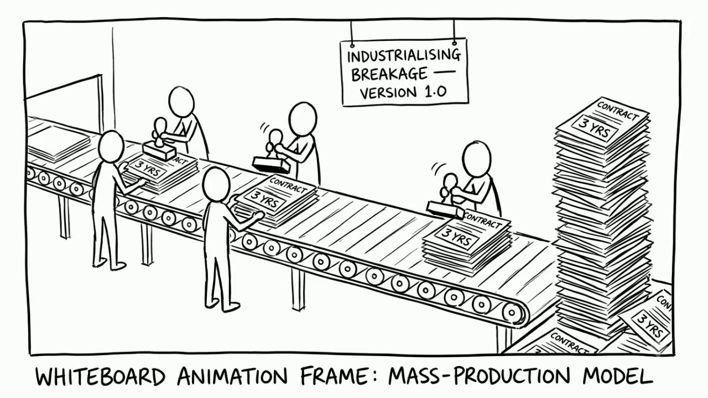 | p5: Black-and-white hand-drawn whiteboard sketch animation frame, 16:9 widescreen. A whiteboard payoff frame: a hand-drawn equation — "20 MINUTES OF IRRITATION" on the left, "= RECOVER $10" on the right, with a hand-drawn "?" over the equals sign, and a bold conclusion beneath: "MOST PEOPLE DO THE MATH WITHOUT WRITING IT DOWN." A small figure shrugs and walks away from the phone. 16:9 widescreen, black marker ink on white, sketchy documentary style. |
| beat_24 | 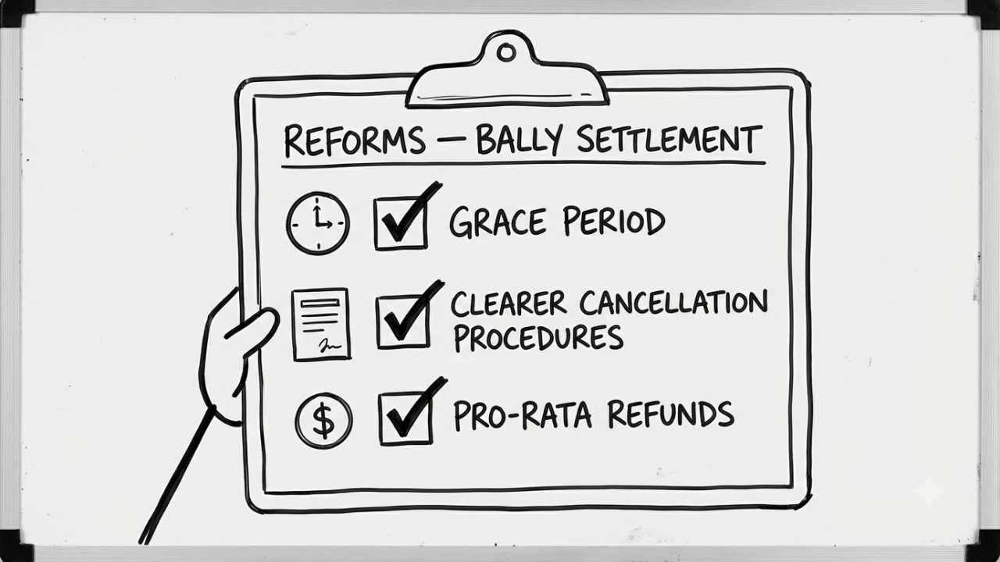 | p6: Black-and-white hand-drawn whiteboard sketch animation frame, 16:9 widescreen. A whiteboard sketch: a small "$10" coin slowly sinking into a soft surface — drawn with curved settling lines around it, like a chair cushion. The coin rests there comfortably, undisturbed. A small caption: "TEN DOLLARS. BELOW THE THRESHOLD WHERE EFFORT FEELS WORTH IT." The image is quiet — the coin will stay. 16:9, black ink on white, documentary sketch style. |
| beat_25 | 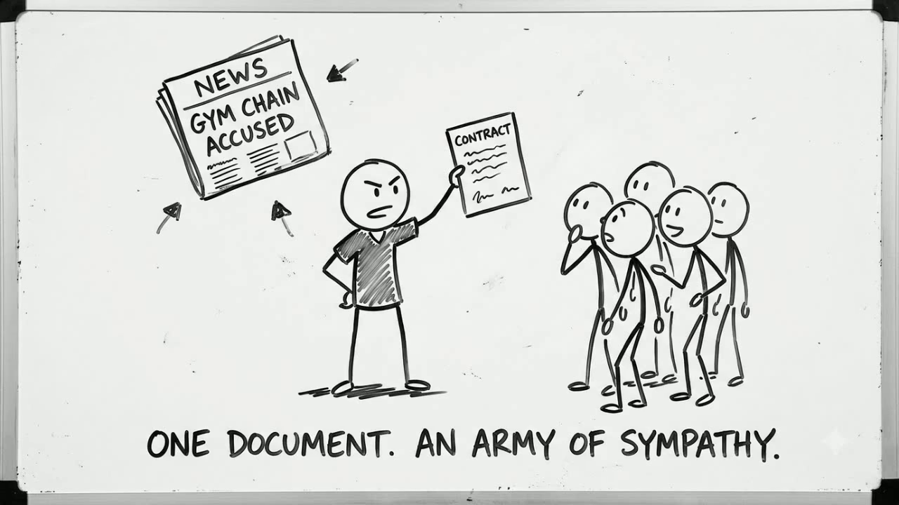 | p1: Black-and-white hand-drawn whiteboard sketch animation frame, 16:9 widescreen. A whiteboard sketch: "$10" drawn small on the left, a bold hand-drawn arrow with hatching sweeping to the right, and "$120 / YEAR" drawn large and heavy on the right. Small calendar icons float along the arrow's path — twelve of them, implying the months. Caption: "TEN DOLLARS BECOMES A HUNDRED AND TWENTY." 16:9 widescreen, black ink on white, documentary sketch style. |
| beat_25 |  | p2: Black-and-white hand-drawn whiteboard sketch animation frame, 16:9 widescreen. A whiteboard sketch: a straight horizontal line of identical small coins flowing from a wallet (left) into a gym building icon (right), uninterrupted across the whole frame, with a small "STOP" sign drawn at the side — but no one is pressing it. The line of coins is the payment stream. Caption: "CONTINUING IS FREE. STOPPING COSTS TIME." 16:9, black marker ink on white, documentary style. |
| beat_26 | 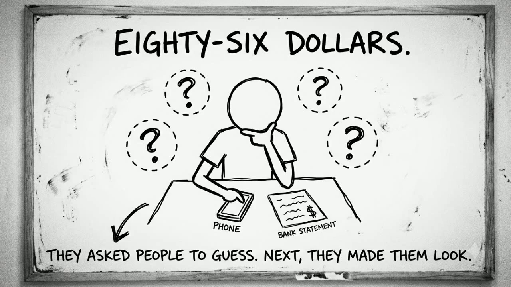 | p1: Black-and-white hand-drawn whiteboard sketch animation frame, 16:9 widescreen. A whiteboard sketch: two stick figures — one drawn solid, labeled "THE PERSON WHO PLANS" (with a calendar in hand); one drawn dashed, labeled "THE PERSON ON TUESDAY" (with a sofa). A thin hand-drawn line connects them, with a small price tag on the line: "THE MEMBERSHIP BILLS THE GAP." The two versions of one person. 16:9 widescreen, black marker ink on white, sketchy documentary style. |
| beat_27 | | p1: Black-and-white hand-drawn whiteboard sketch animation frame, 16:9 widescreen. A whiteboard sketch: a large window frame drawn in bold black marker, and through the window a clear view of the gym model — machines, coins, empty room, all drawn as a neat diagram inside the glass. A stick figure stands at the window looking in, taking notes on a pad. Caption: "THE GYMS DIDN'T INVENT IT. THEY MADE IT VISIBLE." 16:9 widescreen, black ink on white, documentary sketch style. |
| beat_27 | | p2: Black-and-white hand-drawn whiteboard sketch animation frame, 16:9 widescreen. A whiteboard sketch: the frame divided into two worlds — LEFT: the physical world (gym, machines, coins drawn with rough strokes); RIGHT: the digital world (a monitor, a cloud, a cursor drawn with cleaner strokes). In the center, a single hand-drawn node connecting them: a small circle labeled "BREAKAGE". Radiating lines from the node. Caption: "ONE MACHINE, TWO ERAS." 16:9, black ink on white, diagram style. |
| beat_28 | | p1: Black-and-white hand-drawn whiteboard sketch animation frame, 16:9 widescreen. A whiteboard sketch: a classic software box drawn in bold black marker — a rectangular box with shrink-wrap highlights (thin diagonal lines), a simple logo scribble on the front, and a big price tag: "$700". The box sits on a flat surface with hatch shading beneath it. A small label on the box: "PHOTOSHOP". The box is the product — physical, heavy, real. 16:9 widescreen, black ink on white, documentary sketch style. |
| beat_28 | | p2: Black-and-white hand-drawn whiteboard sketch animation frame, 16:9 widescreen. A whiteboard sketch: a close-up of a small card with a printed licence key — drawn as a row of grouped alphanumeric scribbles — and a stick-figure hand holding it up. Around the card, radiating thin lines (the key's value). A label: "YOURS. NOT RENTED." Hatch shading behind the card. 16:9, black ink only, sketchy documentary style. |
| beat_28 | | p3: Black-and-white hand-drawn whiteboard sketch animation frame, 16:9 widescreen. A whiteboard sketch: a store shelf with rows of software boxes, all drawn as identical rectangles with scribbled logos and price tags. A stick-figure customer browses, hand on a box. The shelf looks like a hardware aisle. Caption: "FOR TWENTY YEARS, SOFTWARE SOLD LIKE APPLIANCES." 16:9 widescreen, black ink on white, documentary sketch style. |
| beat_28 | | p4: Black-and-white hand-drawn whiteboard sketch animation frame, 16:9 widescreen. A whiteboard sketch: a hand holding a physical box in the left half (solid strokes, labeled "YOURS"), with a small dashed arrow leading to the right half where the same box is drawn faintly — beginning to turn into a cloud icon labeled "?". The transition is drawn incomplete — the question is open. Caption: "THE PAYMENT HAPPENED ONCE. THE TOOL REMAINED USABLE. THEN EVERYTHING CHANGED." 16:9, black ink on white, diagram sketch style. |
| beat_29 | | p1: Black-and-white hand-drawn whiteboard sketch animation frame, 16:9 widescreen. A whiteboard sketch: a large line chart drawn in bold black marker — the revenue line rises steeply, plateaus flat, rises steeply again, plateaus — a classic sawtooth pattern spanning the frame. Hatch shading beneath the plateau sections. Axis labels: "TIME" (bottom), "REVENUE" (left). A hand-drawn note pointing at a spike: "NEW VERSION". 16:9 widescreen, black ink on white, documentary chart style. |
| beat_29 | | p2: Black-and-white hand-drawn whiteboard sketch animation frame, 16:9 widescreen. A whiteboard sketch: a storefront counter with a crowd of stick figures pushing forward, holding coins and old software boxes, a sign: "NEW VERSION OUT". A burst of radiating lines behind the crowd. The scene is the spike made physical. Caption: "EVERYBODY UPGRADES — ONCE." 16:9 widescreen, black marker ink on white, sketchy documentary style. |
| beat_29 | | p3: Black-and-white hand-drawn whiteboard sketch animation frame, 16:9 widescreen. A whiteboard payoff frame: the sawtooth chart drawn large in the center, and over it a big hand-drawn question mark, with a small figure below looking up at it. Caption at the bottom: "WHAT DO YOU DO WHEN YOUR BEST PRODUCT BECOMES TOO GOOD AT BEING A ONE-TIME PURCHASE?" — the open question before the answer. 16:9, black ink only, confident sketchy style. |
| beat_30 | | p1: Black-and-white hand-drawn whiteboard sketch animation frame, 16:9 widescreen. A whiteboard sketch: a calendar page drawn in bold black marker, with "MAY 6, 2013" written large on it, the date circled heavily with radiating emphasis lines. The page is torn at the corner. Hatch shading behind the calendar. The date is the pivot of the story. 16:9 widescreen, black ink on white, documentary sketch style. |
| beat_30 | | p2: Black-and-white hand-drawn whiteboard sketch animation frame, 16:9 widescreen. A whiteboard sketch: a stick-figure executive standing on a small stage, holding two items — a functioning software box and a "REASONS TO REBUY" checklist that is empty. The figure looks uncomfortable (drawn with a wavy sweat line). A thought bubble: "WE HAVE TO INVENT REASONS." Caption: "THE UNCOMFORTABLE POSITION OF SELLING A TOOL THAT WORKS." 16:9 widescreen, black ink on white, documentary style. |
| beat_30 | | p3: Black-and-white hand-drawn whiteboard sketch animation frame, 16:9 widescreen. A whiteboard sketch: a corridor with two doors — the left door labeled "PHOTOSHOP — ONE-TIME BUY" has a bold X and "CLOSED" sign; the right door labeled "CREATIVE CLOUD — MONTHLY" is open with light radiating. A stick figure hesitates between them. Caption: "THE ONLY WAY TO GET PHOTOSHOP WAS THE SUBSCRIPTION." 16:9, black marker ink on white, sketchy documentary style. |
| beat_30 | | p4: Black-and-white hand-drawn whiteboard sketch animation frame, 16:9 widescreen. A whiteboard sketch: a key icon drawn in bold strokes, but its teeth are fading (dashed outline) and it's attached to a chain that runs off-frame into a cloud shape. A small label: "YOURS — FADING". Caption: "THE KEY WAS GONE. ACCESS BECAME A RENTAL." 16:9, black ink only, sketchy documentary style. |
| beat_30 | | p5: Black-and-white hand-drawn whiteboard sketch animation frame, 16:9 widescreen. A whiteboard payoff frame: "MAY 6, 2013" drawn in huge bold marker at the top, and beneath it two boxes: one with a slash through it ("CS7"), one solid ("CREATIVE CLOUD"). A hand-drawn arrow connects them with the label "THE ONLY WAY FORWARD". Hatch shading behind the whole composition. Caption: "FROM THAT DAY, OWNERSHIP WAS OPTIONAL — AND THEN IT WASN'T." 16:9, black ink on white, confident sketchy style. |
| beat_31 | | p1: Black-and-white hand-drawn whiteboard sketch animation frame, 16:9 widescreen. A whiteboard sketch: a long petition scroll drawn with tiny signature marks (small ticks and scribbles) covering its surface, curling across the frame, with a hand-drawn note: "TENS OF THOUSANDS OF SIGNATURES". A stick-figure hand holds a pen adding one more signature. Hatch shading on the scroll's curve. 16:9 widescreen, black ink on white, documentary sketch style. |
| beat_31 | | p2: Black-and-white hand-drawn whiteboard sketch animation frame, 16:9 widescreen. A whiteboard sketch: a split comparison — LEFT: a designer with a box labeled "STOPPED PAYING — KEEPS TOOLS" (with a checkmark); RIGHT: the same designer with a monitor now showing a lock icon, labeled "STOPPED PAYING — FILES UNOPENABLE" (with an X). Caption: "UNDER THE NEW MODEL, STOPPING PAID MEANT LOSING YOUR WORK." 16:9, black marker ink on white, sketchy documentary style. |
| beat_31 | | p3: Black-and-white hand-drawn whiteboard sketch animation frame, 16:9 widescreen. A whiteboard sketch: a large wave drawn in bold strokes — drawn with swirling motion lines and hatching — labeled "THE BACKLASH", crashing against a small company building icon on a cliff. Spray marks drawn as small radiating dots. The wave is the anger made physical. 16:9 widescreen, black ink on white, documentary sketch style. |
| beat_31 | | p4: Black-and-white hand-drawn whiteboard sketch animation frame, 16:9 widescreen. A whiteboard payoff frame: on the LEFT, a pile of angry newspapers and petition scrolls; on the RIGHT, a single small subscription checkbox being ticked. Between them, a hand-drawn arrow with a label: "AND THEN PEOPLE SUBSCRIBED." Hatch shading on both sides. Caption: "THE ANGER WAS REAL. SO WAS THE RESULT." — leading into the numbers. 16:9, black ink only, confident sketchy style. |
| beat_32 | | p1: Black-and-white hand-drawn whiteboard sketch animation frame, 16:9 widescreen. A whiteboard sketch: "$1.23B" drawn small and light on the LEFT with a label "2013" beneath it, and "$18.28B" drawn enormous and heavy on the RIGHT with a label "2023". A bold hand-drawn arrow with hatching connects them. Radiating emphasis lines around the big number. Caption: "SUBSCRIPTION REVENUE." 16:9 widescreen, black ink on white, documentary sketch style. |
| beat_32 | | p2: Black-and-white hand-drawn whiteboard sketch animation frame, 16:9 widescreen. A whiteboard sketch: a horizontal comparison — "$4.4B" on the left labeled "BEFORE THE TRANSITION", "$15B+" on the right labeled "AFTER", with a bold arrow between them. Small building icons above each number (company scale). Caption: "TOTAL COMPANY REVENUE." 16:9 widescreen, black ink on white, chart style. |
| beat_32 | | p3: Black-and-white hand-drawn whiteboard sketch animation frame, 16:9 widescreen. A whiteboard sketch: the rising revenue curve drawn across the bottom of the frame, and floating above it a big hand-drawn question mark with a small label: "DID PHOTOSHOP GET 15× BETTER?" A tiny stick figure at the edge of the chart looks up at the question. The frame sets up the next beat's reversal. 16:9, black ink on white, documentary sketch style. |
| beat_33 | | p1: Black-and-white hand-drawn whiteboard sketch animation frame, 16:9 widescreen. A whiteboard sketch: "15×" drawn in enormous bold black marker with a heavy hand-drawn slash crossing it out, radiating impact lines. Beneath, smaller text: "BETTER? NO." Caption: "ADOBE DID NOT GET 15× BETTER AT MAKING SOFTWARE." 16:9 widescreen, black ink on white, documentary sketch style. |
| beat_33 | | p2: Black-and-white hand-drawn whiteboard sketch animation frame, 16:9 widescreen. A whiteboard sketch: the word "OWNED" drawn in solid bold strokes on the left, a heavy hand-drawn arrow with hatching, and the word "RENTED" on the right drawn equally bold. Beneath the arrow, a small key icon transforming into a cloud icon. Caption: "WHAT CHANGED WAS NOT THE PRODUCT. IT WAS THE OWNERSHIP." 16:9 widescreen, black ink on white, diagram style. |
| beat_33 | | p3: Black-and-white hand-drawn whiteboard sketch animation frame, 16:9 widescreen. A whiteboard sketch: a designer figure standing next to a large stack of finished work (drawn as a pile of documents and images with a trophy on top), with a monthly payment card floating above the stack — the work depends on the payment continuing. Caption: "A CUSTOMER WHO MUST KEEP PAYING TO KEEP WHAT THEY'VE ALREADY MADE." 16:9, black marker ink on white, documentary style. |
| beat_33 | | p4: Black-and-white hand-drawn whiteboard sketch animation frame, 16:9 widescreen. A whiteboard sketch: a small hand-drawn arrow labeled "SOFTWARE IMPROVED — A LITTLE" pointing slightly upward, drawn thin and modest; and a second arrow drawn huge and bold labeled "OWNERSHIP CHANGED — COMPLETELY" pointing steeply upward. Caption: "THE SOFTWARE IMPROVED. THE ECONOMIC RELATIONSHIP CHANGED MORE." 16:9, black ink only, sketchy documentary style. |
| beat_33 | | p5: Black-and-white hand-drawn whiteboard sketch animation frame, 16:9 widescreen. A whiteboard sketch: two machines drawn side by side — LEFT: a box with a gear labeled "SELL ONCE" (one coin out, then dust); RIGHT: a box labeled "RENT FOREVER" with a continuous stream of coins. A hand-drawn label beneath: "THAT IS A DIFFERENT MACHINE." The contrast is the conclusion. 16:9, black ink on white, diagram style. |
| beat_34 | | p1: Black-and-white hand-drawn whiteboard sketch animation frame, 16:9 widescreen. A whiteboard sketch: the equation "ANGER ≠ CHURN" drawn in bold black marker — with the "≠" drawn oversized and heavy. On the left side, a small storm cloud icon (anger); on the right side, a small coin with a checkmark (still subscribed). Hatch shading behind the ≠. The equation is the lesson. 16:9 widescreen, black ink on white, documentary sketch style. |
| beat_34 | | p2: Black-and-white hand-drawn whiteboard sketch animation frame, 16:9 widescreen. A whiteboard sketch: two vertical meters — LEFT labeled "ANGER" with the needle pinned high; RIGHT labeled "REVENUE" with the needle also pinned high. Both meters drawn with bold strokes and hatching. A hand-drawn note between them: "BOTH WENT UP." Caption: "THE ANGER WAS REAL. THE RESULT WAS REALER." 16:9 widescreen, black ink on white, diagram style. |
| beat_34 | | p3: Black-and-white hand-drawn whiteboard sketch animation frame, 16:9 widescreen. A whiteboard payoff frame: the words "THE BACKLASH DOESN'T MATTER" drawn in huge bold black marker letters, centered, with heavy hatching behind them. Small text beneath: "THAT'S THE LESSON THE WHOLE MARKET TOOK." The frame holds on the terrible idea. 16:9, black ink only, confident sketchy style. |
| beat_35 | | p1: Black-and-white hand-drawn whiteboard sketch animation frame, 16:9 widescreen. A whiteboard sketch: two hand-drawn year labels — "2013" and "2023" — drawn large at opposite ends of the frame, with a horizontal arrow between them. Beneath the arrow, small icons: a cable box fading out (dashed) at the 2013 end, and a cluster of streaming cards at the 2023 end. The frame is the reset marker. 16:9 widescreen, black ink on white, diagram style. |
| beat_36 | | p1: Black-and-white hand-drawn whiteboard sketch animation frame, 16:9 widescreen. A whiteboard sketch: a large cable bill drawn in bold black marker — a paper with scribbled line items, a big total at the bottom circled heavily: "ONE LARGE MONTHLY BILL". A stick-figure hand holds it with a slight frown. Hatch shading around the total. Caption: "THE BUNDLE." 16:9 widescreen, black ink on white, documentary sketch style. |
| beat_36 | | p2: Black-and-white hand-drawn whiteboard sketch animation frame, 16:9 widescreen. A whiteboard sketch: a chaotic tangle of cables behind a TV — drawn as looping scribbled lines in bold strokes with heavy hatching in the tangle — a cable box and a router buried inside. The tangle is drawn dark and dense, the TV above clean. Caption: "THE BOX. THE CABLES. THE BILL." 16:9 widescreen, black ink on white, documentary sketch style. |
| beat_36 | | p3: Black-and-white hand-drawn whiteboard sketch animation frame, 16:9 widescreen. A whiteboard sketch: on the LEFT, the escape poster from PROMPT 06 (drawn bold and hopeful); on the RIGHT, a hand-drawn arrow leading to a blank TV screen with a question mark. A small figure walks from left to right. Caption: "AND FOR A WHILE, IT WAS EXACTLY THAT." — the frame holds before the reversal. 16:9, black ink on white, documentary sketch style. |
| beat_37 | | p1: Black-and-white hand-drawn whiteboard sketch animation frame, 16:9 widescreen. A whiteboard sketch: on the LEFT, a single tall stack of discs or cards labeled "ONE SERVICE", and a bold hand-drawn arrow splitting it apart into multiple smaller stacks on the RIGHT — each drawn with a small label scribble. The split is drawn with radiating crack lines. Caption: "THE CATALOGUE SPLIT." 16:9 widescreen, black ink on white, diagram sketch style. |
| beat_37 | | p2: Black-and-white hand-drawn whiteboard sketch animation frame, 16:9 widescreen. A whiteboard sketch: five service cards fanned like a hand of cards — each drawn as a small rectangle with a play-button icon and a tiny label scribble — spread across the frame, with a stick-figure hand holding them. A small price tag hangs from each card. Caption: "THE ONLY WAY TO WATCH WHAT YOU USED TO WATCH." 16:9 widescreen, black ink on white, documentary style. |
| beat_37 | | p3: Black-and-white hand-drawn whiteboard sketch animation frame, 16:9 widescreen. A whiteboard sketch: a single large bill (the old cable bill, drawn faded/dashed in the background) being reassembled from five separate small cards in the foreground — the small cards sliding together along hand-drawn arrows. A hand-drawn note: "THE BUNDLE, REBUILT ONE CARD AT A TIME." The frame sets up the numbers ahead. 16:9, black marker ink on white, documentary sketch style. |
| beat_38 | | p1: Black-and-white hand-drawn whiteboard sketch animation frame, 16:9 widescreen. A whiteboard sketch: "4.7" drawn in huge bold black marker with a label beneath: "STREAMING SERVICES PER HOUSEHOLD". Beneath that, smaller: "$61 / MONTH COMBINED". A hand-drawn house icon in the corner with radiating lines. Hatch shading behind the numbers. The frame is a pure stat reveal. 16:9 widescreen, black ink on white, documentary sketch style. |
| beat_38 | | p2: Black-and-white hand-drawn whiteboard sketch animation frame, 16:9 widescreen. A whiteboard sketch: a simple house icon drawn in bold strokes, and inside it a stick figure sitting on a sofa with a remote, surrounded by four solid app tiles and one half-drawn dashed tile floating in the air. A hand-drawn total floating above the TV: "$61". Caption: "THE AVERAGE AMERICAN HOUSEHOLD." 16:9, black marker ink on white, documentary style. |
| beat_38 | | p3: Black-and-white hand-drawn whiteboard sketch animation frame, 16:9 widescreen. A whiteboard sketch: a set of ascending stairs, each step labeled with a small service scribble and a tiny "+$2" or "+$3" note, climbing from "$48" to "$61". The steps are drawn with hatching. A hand-drawn arrow marks the top. Caption: "PRICE RISES, ONE PLATFORM AT A TIME." 16:9 widescreen, black ink on white, chart style. |
| beat_38 | | p4: Black-and-white hand-drawn whiteboard sketch animation frame, 16:9 widescreen. A whiteboard sketch: a monthly calendar page with small recurring charge ticks across all days, and beside it a stack of five small bills that visually equals one old large bill (drawn dashed behind them, same height). A hand-drawn equal sign between them. Caption: "THE SAME SHAPE AS BEFORE. DIFFERENT NAME." — sets up the six-small-bills idea. 16:9, black ink on white, diagram sketch style. |
| beat_39 | | p1: Black-and-white hand-drawn whiteboard sketch animation frame, 16:9 widescreen. A whiteboard sketch: a single large bill on the LEFT, and a bold hand-drawn crack/fracture splitting it into six smaller bills on the RIGHT — drawn with radiating crack lines and hatching. The total area of the six bills visually matches the one big bill. A hand-drawn note: "SAME TOTAL". 16:9 widescreen, black ink on white, diagram sketch style. |
| beat_39 | | p2: Black-and-white hand-drawn whiteboard sketch animation frame, 16:9 widescreen. A whiteboard sketch: a horizontal meter labeled "NOTICING" — on the LEFT end, a big bill drawn with a stick figure staring at it (high attention); on the RIGHT end, six small bills drawn with the figure asleep with a "Zzz" (zero attention). An arrow shows the slide from left to right. 16:9 widescreen, black ink on white, diagram style. |
| beat_39 | | p3: Black-and-white hand-drawn whiteboard sketch animation frame, 16:9 widescreen. A whiteboard sketch: a hand-drawn reconstruction scene — workers (stick figures) reassembling a giant bill from six small cards on an assembly table, with a blueprint labeled "REBUILD THE BUNDLE". One worker holds a sign: "FRAGMENT IT." Caption: "THE INDUSTRY REBUILT THE BUNDLE BY FRAGMENTING IT." — the mechanism about to be named. 16:9, black ink on white, diagram sketch style. |
| beat_40 | | p1: Black-and-white hand-drawn whiteboard sketch animation frame, 16:9 widescreen. A whiteboard sketch: the word "STREAMFLATION" drawn in huge bold black marker letters, with a hand-drawn underline and radiating emphasis lines. Beneath it, a small TV icon fused with an inflation balloon icon (a circle with an arrow pointing up). Hatch shading behind the word. The term is being introduced. 16:9 widescreen, black ink on white, documentary sketch style. |
| beat_40 | | p2: Black-and-white hand-drawn whiteboard sketch animation frame, 16:9 widescreen. A whiteboard sketch: five small bills in a row, each with a tiny price-rise tag, and beneath each bill a small "X" (not worth acting on) drawn thin and light. A hand-drawn bracket: "NONE OF THE INCREASES IS WORTH ACTING ON ALONE." 16:9 widescreen, black ink on white, diagram sketch style. |
| beat_40 | | p3: Black-and-white hand-drawn whiteboard sketch animation frame, 16:9 widescreen. A whiteboard sketch: a stick figure watching their statement month after month — three small calendar frames drawn in a row, each showing a bill that grows by a tiny amount (drawn as a slightly taller bill each frame). The figure's expression stays neutral in each frame. Caption: "EACH RAISE FELT LIKE NOTHING. THAT WAS THE DESIGN." 16:9, black ink on white, documentary sketch style. |
| beat_41 | | p1: Black-and-white hand-drawn whiteboard sketch animation frame, 16:9 widescreen. A whiteboard sketch: a simple map drawn in bold black marker — a land mass with small icons scattered across it: a car, a printer, a doorbell, a kitchen mixer, a phone, a TV. Each icon has a small monthly price tag. Radiating lines from a center point labeled "THE MODEL" spread to all the icons. Caption: "WITHIN A FEW YEARS, THE MODEL WAS EVERYWHERE." 16:9 widescreen, black ink on white, diagram sketch style. |
| beat_41 | | p2: Black-and-white hand-drawn whiteboard sketch animation frame, 16:9 widescreen. A whiteboard sketch: a car interior in cutaway — a driver stick figure and a seat with a hand-drawn heating icon (curved lines rising from the seat), drawn bold. A small monthly fee card floats above the seat with a lock icon. A hand-drawn note: "ALREADY INSTALLED. YOU BOUGHT THE CAR." Caption: "BMW TRIED CHARGING MONTHLY FOR HEATED SEATS." 16:9 widescreen, black ink on white, documentary style. |
| beat_41 | | p3: Black-and-white hand-drawn whiteboard sketch animation frame, 16:9 widescreen. A whiteboard sketch: a row of everyday objects — a car seat, a printer, a doorbell, a fridge, a blender — each drawn with a small padlock icon on it, each lock connected by a thin line to a floating "MONTHLY" tag. The objects are yours; the features are locked. Caption: "FEATURES IN THINGS YOU OWN, WAITING BEHIND A MONTHLY PAYMENT." 16:9, black marker ink on white, diagram style. |
| beat_41 | | p4: Black-and-white hand-drawn whiteboard sketch animation frame, 16:9 widescreen. A whiteboard sketch: a hand-drawn podium with a trophy on top, and on the trophy a label: "MAKING IT HARD TO LEAVE". Around the podium, smaller objects (products) fade into the background. A hand-drawn note: "MORE VALUABLE THAN ANY PRODUCT DECISION." Caption: "ONCE EVERYTHING IS A SUBSCRIPTION, THIS IS THE WINNING MOVE." 16:9, black marker ink on white, documentary style. |
| beat_41 | | p5: Black-and-white hand-drawn whiteboard sketch animation frame, 16:9 widescreen. A whiteboard sketch: a central circle labeled "SUBSCRIBE" with thick hand-drawn lines radiating outward to many small object icons — car, printer, doorbell, TV, phone, fridge, coffee maker — forming a web. The lines are drawn bold with hatching. Caption: "AND NOW THE QUESTION ISN'T WHAT YOU BUY. IT'S HOW HARD IT IS TO LEAVE." — sets up the Iliad. 16:9, black ink on white, diagram sketch style. |
| beat_42 | | p1: Black-and-white hand-drawn whiteboard sketch animation frame, 16:9 widescreen. A whiteboard sketch: a classical federal building with columns and a wide staircase, drawn in bold black marker with hatching on the columns, a flag on top. In the foreground, a legal document scroll labeled "FTC v. AMAZON" with a seal. Caption: "IN 2023, THE FEDERAL TRADE COMMISSION SUED AMAZON." 16:9 widescreen, black ink on white, documentary sketch style. |
| beat_42 | | p2: Black-and-white hand-drawn whiteboard sketch animation frame, 16:9 widescreen. A whiteboard sketch: a website checkout screen drawn as a large rectangle — a big bold button at the top labeled "PLACE ORDER WITH PRIME" with radiating lines, and beneath it, small and light: a tiny line of text with a checkbox labeled "SKIP PRIME". A hand-drawn note: "THE EXPENSIVE CHOICE IS THE EASY ONE." 16:9 widescreen, black ink on white, documentary style. |
| beat_42 | | p3: Black-and-white hand-drawn whiteboard sketch animation frame, 16:9 widescreen. A whiteboard sketch: a magnifying glass over a checkout page, and within the lens, a small spider-web pattern drawn over the interface — the dark pattern. A label beneath the lens: "REGULATORS CALL IT DARK PATTERNS." Hatch shading on the web. 16:9, black marker ink on white, sketchy documentary style. |
| beat_42 | | p4: Black-and-white hand-drawn whiteboard sketch animation frame, 16:9 widescreen. A whiteboard sketch: a hand-drawn interface diagram — a huge bold button labeled "YES, PRIME" at the top in thick strokes with radiating lines, and a tiny thin link at the very bottom labeled "no thanks". A ruler drawn beside them shows the size difference. Caption: "THE EXPENSIVE CHOICE IS THE EASY ONE." 16:9, black marker ink on white, diagram style. |
| beat_42 | | p5: Black-and-white hand-drawn whiteboard sketch animation frame, 16:9 widescreen. A whiteboard sketch: a gavel striking a desk (drawn with impact lines and a small sound burst), and on the desk, a document labeled "FTC v. AMAZON — 2023" with a checkbox list: "ENROLLMENT", "CANCELLATION". The frame opens the legal chapter. Caption: "THE CASE THAT WAS ABOUT A BUTTON — AND WHAT HAPPENED WHEN PEOPLE TRIED TO LEAVE." 16:9, black ink on white, sketchy documentary style. |
| beat_43 | | p1: Black-and-white hand-drawn whiteboard sketch animation frame, 16:9 widescreen. A whiteboard sketch: a vast dense crowd of stick figures stretching across the frame to the horizon, drawn with rapid repetitive strokes forming a dark mass, and a hand-drawn label above: "MILLIONS". Each figure has a tiny dollar sign above their head. Caption: "MILLIONS PAYING FOR A SUBSCRIPTION THEY NEVER KNOWINGLY STARTED." 16:9 widescreen, black ink on white, documentary sketch style. |
| beat_43 | | p2: Black-and-white hand-drawn whiteboard sketch animation frame, 16:9 widescreen. A whiteboard payoff frame: on the LEFT, a crowd of figures with small question marks; on the RIGHT, a long corridor drawn with hatching and a tiny distant exit sign. A hand-drawn arrow connects them: "THEY TRIED TO LEAVE. THIS IS WHAT THEY FOUND." — sets up the cancellation maze. 16:9, black ink only, confident sketchy style. |
| beat_44 | | p1: Black-and-white hand-drawn whiteboard sketch animation frame, 16:9 widescreen. A whiteboard sketch: a labyrinth drawn in bold black marker, its walls made of small rectangular UI cards — each card a screen with a tiny "?" on it. At the labyrinth's center, a small figure; at the far edge, a tiny exit sign. The maze fills the frame with hatching. Caption: "TO LEAVE PRIME, YOU WALK A MAZE." 16:9 widescreen, black ink on white, sketchy documentary style. |
| beat_44 | | p2: Black-and-white hand-drawn whiteboard sketch animation frame, 16:9 widescreen. A whiteboard sketch: a screen showing a list of benefit icons with sad faces drawn on them: a delivery box, a streaming play button, a music note, a book — each with a small "YOU'LL LOSE THIS" label. A figure at the screen hesitates. Caption: "REMINDERS OF EVERYTHING YOU'D LOSE." 16:9 widescreen, black ink on white, documentary style. |
| beat_44 | | p3: Black-and-white hand-drawn whiteboard sketch animation frame, 16:9 widescreen. A whiteboard payoff frame: a full-frame labyrinth drawn in heavy bold strokes, with a tiny EXIT sign visible but distant, and a small figure at the entrance. Radiating lines around the exit sign to show how far away it is. Caption: "NOT A LOCKED DOOR. A LONG PATH TO THE DOOR." — the frame that names the design. 16:9, black marker ink on white, confident sketchy style. |
| beat_45 | | p1: Black-and-white hand-drawn whiteboard sketch animation frame, 16:9 widescreen. A whiteboard sketch: a thick ancient book drawn in bold strokes — a classic tome with a spine and page edges — standing upright, with "ILIAD" written on its cover in hand-drawn Greek-style lettering. Radiating thin lines behind it. Hatch shading on the pages. The book is the origin of the name. 16:9 widescreen, black ink on white, documentary sketch style. |
| beat_46 | | p1: Black-and-white hand-drawn whiteboard sketch animation frame, 16:9 widescreen. A whiteboard sketch: a library shelf with the classic tome labeled "ILIAD — HOMER" standing prominently, drawn in bold strokes with radiating lines. A stick-figure hand reaches for it. Hatch shading on the shelf. Caption: "A POEM ABOUT A WAR THAT LASTED TEN YEARS." 16:9 widescreen, black ink on white, documentary sketch style. |
| beat_46 | | p2: Black-and-white hand-drawn whiteboard sketch animation frame, 16:9 widescreen. A whiteboard sketch: the phrase "NOT AN ACCIDENT" drawn in bold marker with a slash through the word "coincidence" written smaller and crossed out beneath. A small magnifying glass over a document with "ILIAD" on it. Caption: "NOT A TRANSLATION SLIP. NOT A NAMING COINCIDENCE." 16:9 widescreen, black ink on white, sketchy documentary style. |
| beat_46 | | p3: Black-and-white hand-drawn whiteboard sketch animation frame, 16:9 widescreen. A whiteboard sketch: the cancellation maze drawn faintly across the whole frame, and standing before it a small stick figure — the customer — with a small thought bubble showing the word "ILIAD". The tone is quiet and unsettling. Caption: "THE CUSTOMER WALKED THE EPIC. THE COMPANY WROTE IT." 16:9, black marker ink on white, documentary sketch style. |
| beat_47 | | p1: Black-and-white hand-drawn whiteboard sketch animation frame, 16:9 widescreen. A whiteboard sketch: a courtroom scene that abruptly transforms — on the LEFT, the jury box and bench drawn solid; on the RIGHT, the same scene replaced by a settlement table with documents, drawn with a bold dividing arrow labeled "SETTLED". The trial stops mid-frame. 16:9 widescreen, black ink on white, diagram sketch style. |
| beat_48 | | p1: Black-and-white hand-drawn whiteboard sketch animation frame, 16:9 widescreen. A whiteboard sketch: "$2.5B" drawn in enormous bold black marker strokes filling the frame's center, with rough double-lines and heavy hatching behind it. Radiating emphasis lines around the digits. Beneath, smaller text: "TWO AND A HALF BILLION DOLLARS". The frame is a pure number reveal. 16:9 widescreen, black ink on white, documentary sketch style. |
| beat_48 | | p2: Black-and-white hand-drawn whiteboard sketch animation frame, 16:9 widescreen. A whiteboard sketch: a tower built of stacked coins labeled "$1B", drawn tall and solid with hatching, standing beside a government building icon. A ruler drawn beside the tower marks its height as a record. Caption: "A RECORD PENALTY." 16:9 widescreen, black ink on white, diagram style. |
| beat_48 | | p3: Black-and-white hand-drawn whiteboard sketch animation frame, 16:9 widescreen. A whiteboard sketch: the $2.5B number drawn at the top, and beneath it a small diagram: a button (enrollment), a maze (cancellation), and a scale of justice — connected by thin lines to the number. A hand-drawn note: "ALL OF THIS, FOR A BUTTON AND A MAZE." The frame connects the money to the mechanism. 16:9, black marker ink on white, documentary sketch style. |
| beat_49 | | p1: Black-and-white hand-drawn whiteboard sketch animation frame, 16:9 widescreen. A whiteboard sketch: two legal documents side by side — the first labeled "FTC v. AMAZON" with a checkmark, the second labeled "DOJ v. ADOBE — JUNE 2024" drawn bolder with radiating lines. A hand-drawn note between them: "NOT ALONE". Caption: "AMAZON WAS NOT ALONE." 16:9 widescreen, black ink on white, documentary sketch style. |
| beat_49 | | p2: Black-and-white hand-drawn whiteboard sketch animation frame, 16:9 widescreen. A whiteboard sketch: a magnifying glass held over a document's fine print — dense tiny scribbled lines drawn as micro-strokes, with one hidden phrase readable under the lens: "TERMINATION FEE APPLIES". The lens reveals what the eye misses. Caption: "IN FINE PRINT, BEHIND OPTIONAL BOXES AND LINKS." 16:9 widescreen, black ink on white, documentary style. |
| beat_49 | | p3: Black-and-white hand-drawn whiteboard sketch animation frame, 16:9 widescreen. A whiteboard sketch: two case cards — "AMAZON — PRIME BUTTON" and "ADOBE — TERMINATION FEE" — drawn side by side, with a hand-drawn line connecting them labeled: "SAME UNDERLYING THING". A small question mark above the line. The frame sets up the fee reveal and the pattern. 16:9, black marker ink on white, diagram sketch style. |
| beat_50 | | p1: Black-and-white hand-drawn whiteboard sketch animation frame, 16:9 widescreen. A whiteboard sketch: a contract document drawn in bold black marker being split in half — a pair of scissors cutting through it with a motion arc, the two halves separating with radiating crack lines. A hand-drawn label on the cut: "50%". Caption: "THE FEE: FIFTY PERCENT OF EVERYTHING REMAINING." 16:9 widescreen, black ink on white, documentary sketch style. |
| beat_50 | | p2: Black-and-white hand-drawn whiteboard sketch animation frame, 16:9 widescreen. A whiteboard sketch: a row of eight month icons (small calendar squares), with the first four drawn solid and the last four drawn dashed — and a bracket over the dashed four labeled "LEAVING COSTS HALF OF THESE". A hand-drawn slash marks the split. Caption: "HALF OF THE EIGHT MONTHS THEY THOUGHT THEY WERE WALKING AWAY FROM." 16:9 widescreen, black ink on white, diagram style. |
| beat_50 | | p3: Black-and-white hand-drawn whiteboard sketch animation frame, 16:9 widescreen. A whiteboard sketch: a quiet settlement room — a table with a document labeled "SETTLEMENT — $75M", two chairs, a window showing the courthouse faintly. A pen rests on the document. The scene is still and final. Caption: "PAID. SIGNED. CLOSED." — the chapter's end. 16:9, black marker ink on white, documentary sketch style. |
| beat_51 | | p1: Black-and-white hand-drawn whiteboard sketch animation frame, 16:9 widescreen. A whiteboard sketch: two doors drawn side by side — one labeled "PRIME EXIT" with a maze pattern on it, one labeled "ADOBE EXIT" with a fine-print pattern on it — and behind both doors, drawn connected, the same hand-drawn mechanism: a single heavy gear. Caption: "DIFFERENT DOORS. ONE MACHINE." 16:9 widescreen, black ink on white, sketchy documentary style. |
| beat_52 | | p1: Black-and-white hand-drawn whiteboard sketch animation frame, 16:9 widescreen. A whiteboard sketch: a wall with the words "SURELY SOMEBODY WROTE A RULE?" written in bold hand-drawn marker with a large question mark, radiating lines around it. A stick figure stands before the wall, hand on chin. Caption: "THE OBVIOUS QUESTION." 16:9 widescreen, black ink on white, documentary sketch style. |
| beat_52 | | p2: Black-and-white hand-drawn whiteboard sketch animation frame, 16:9 widescreen. A whiteboard sketch: the rule document standing tall in the center with a spotlight, and at the bottom edge of the frame, drawn faintly and small, a shadow (heavy hatching) beginning to creep over the document's base. A small hand-drawn note: "DAYS BEFORE IT TOOK EFFECT...". The frame foreshadows the reversal. 16:9, black marker ink on white, sketchy documentary style. |
| beat_53 | | p1: Black-and-white hand-drawn whiteboard sketch animation frame, 16:9 widescreen. A whiteboard sketch: the words "CLICK-TO-CANCEL" drawn in bold black marker letters, centered, with a hand-drawn underline and radiating emphasis lines. Beneath, smaller text: "THE RULE". Hatch shading behind the title. The frame names the rule. 16:9 widescreen, black ink on white, documentary sketch style. |
| beat_53 | | p2: Black-and-white hand-drawn whiteboard sketch animation frame, 16:9 widescreen. A whiteboard sketch: a telephone icon drawn in bold strokes with a bold slash through it, radiating impact lines. Beside it, a simple web button with a checkmark. Caption: "NO PHONE CALL. NO RETENTION MAZE. NO ILIAD." 16:9, black marker ink on white, sketchy documentary style. |
| beat_53 | | p3: Black-and-white hand-drawn whiteboard sketch animation frame, 16:9 widescreen. A whiteboard sketch: a single website window drawn as a rectangle, with two doors on it — one labeled "SIGN UP" and one labeled "CANCEL" — both drawn the same size and same boldness. A hand-drawn note: "ON THE SAME WEBSITE". Caption: "WHATEVER EFFORT TO BEGIN — NO MORE TO END." 16:9 widescreen, black ink on white, diagram sketch style. |
| beat_53 | | p4: Black-and-white hand-drawn whiteboard sketch animation frame, 16:9 widescreen. A whiteboard sketch: the rule document standing on a government desk, with a small balanced scale on one side and a stack of law books on the other, a flag behind. Radiating lines from the document. Caption: "THE SYMMETRY RULE — ABOUT TO TAKE EFFECT." — the calm before the twist. 16:9, black marker ink on white, sketchy documentary style. |
| beat_54 | | p1: Black-and-white hand-drawn whiteboard sketch animation frame, 16:9 widescreen. A whiteboard sketch: two groups of stick figures facing each other across a dividing line — on the LEFT, a small group labeled "FTC" (drawn with a flag); on the RIGHT, a large dense group of figures labeled "INDUSTRY" with building icons behind them. The right group is bigger. Caption: "A LARGE PART OF AMERICAN INDUSTRY ON THE OTHER SIDE." 16:9 widescreen, black ink on white, diagram sketch style. |
| beat_55 | | p1: Black-and-white hand-drawn whiteboard sketch animation frame, 16:9 widescreen. A whiteboard sketch: a framed document on a government wall — the rule — being taken down by stick-figure hands, drawn with motion arcs, leaving an empty outline on the wall. The document tilts as it comes off. Caption: "THE RULE WAS GOING TO TAKE EFFECT IN DAYS. IT DIDN'T." 16:9 widescreen, black ink on white, documentary style. |
| beat_56 | | p1: Black-and-white hand-drawn whiteboard sketch animation frame, 16:9 widescreen. A whiteboard sketch: the words "NOT WRONG" drawn in bold black marker with a heavy underline, and a small gavel icon beside them with a checkmark — the court agreeing with the rule's substance. Hatch shading behind the words. Caption: "THE COURT DID NOT RULE THAT CLICK-TO-CANCEL WAS WRONG." 16:9 widescreen, black ink on white, documentary sketch style. |
| beat_56 | | p2: Black-and-white hand-drawn whiteboard sketch animation frame, 16:9 widescreen. A whiteboard sketch: a document with a checklist at the top — a box labeled "REGULATORY ANALYSIS — COSTS AND BENEFITS" that is drawn EMPTY, with a large question mark inside it and radiating lines. A small hand-drawn note: "REQUIRED BEFORE FINALISING". The empty box is the answer. 16:9, black marker ink on white, sketchy documentary style. |
| beat_57 | | p1: Black-and-white hand-drawn whiteboard sketch animation frame, 16:9 widescreen. A whiteboard sketch: the single word "PROCEDURE" drawn in enormous bold black marker letters in the center, with heavy hatching behind it and a hand-drawn underline. The background is dark-hatched. The word appears from darkness — the true killer. 16:9 widescreen, black ink on white, high-contrast sketch style. |
| beat_57 | | p2: Black-and-white hand-drawn whiteboard sketch animation frame, 16:9 widescreen. A whiteboard sketch: a long horizontal timeline with many small document icons along it — years of work — each with a small checkmark, and at the end of the timeline, a single bold slash and the word "VACATED". The accumulation vs the ending. Caption: "YEARS OF RULEMAKING — UNDONE BY A MISSING ANALYSIS." 16:9 widescreen, black ink on white, diagram sketch style. |
| beat_57 | | p3: Black-and-white hand-drawn whiteboard sketch animation frame, 16:9 widescreen. A whiteboard sketch: a stick figure holding up a single blank sheet of paper labeled "THE MISSING ANALYSIS" next to a giant pile of rulemaking documents labeled "YEARS OF WORK". The single blank sheet is drawn bold; the pile is drawn with hatching. A hand-drawn note: "THIS KILLED THAT." Caption: "YEARS OF RULEMAKING, VACATED DAYS BEFORE THE DEADLINE." 16:9, black marker ink on white, sketchy documentary style. |
| beat_58 | | p1: Black-and-white hand-drawn whiteboard sketch animation frame, 16:9 widescreen. A whiteboard sketch: a government desk drawn in bold strokes with an empty document stand on it — a blank spot where the rule should be — a calendar on the wall showing "2026". The empty stand is the subject, drawn with a small radiating line. Caption: "AS OF NOW, IN 2026, THERE IS NO FEDERAL CLICK-TO-CANCEL RULE IN EFFECT." 16:9 widescreen, black ink on white, documentary sketch style. |
| beat_58 | | p2: Black-and-white hand-drawn whiteboard sketch animation frame, 16:9 widescreen. A whiteboard sketch: a simple map of the United States drawn in bold strokes — a dashed outline of the country — with several scattered small law-book icons on individual states, each with a checkmark. A hand-drawn label: "INDIVIDUAL STATES HAVE THEIR OWN LAWS". 16:9, black marker ink on white, sketchy documentary style. |
| beat_58 | | p3: Black-and-white hand-drawn whiteboard sketch animation frame, 16:9 widescreen. A whiteboard sketch: a single fresh sheet of paper on a desk, drawn in bold strokes, with a header: "NOTICE OF PROPOSED RULEMAKING — V2" and a few scribbled lines, a pen beside it. The paper is new — a restart. Caption: "THE FTC FILED THE EARLY PAPERWORK FOR A NEW VERSION." 16:9 widescreen, black ink on white, documentary style. |
| beat_58 | | p4: Black-and-white hand-drawn whiteboard sketch animation frame, 16:9 widescreen. A whiteboard sketch: a checkout screen drawn in bold strokes — a cancel button visible but small, a retention screen behind it, a phone icon — with a small caption: "ALL OF THIS — STILL LEGAL". A hand-drawn arrow points from the screen to the words "STILL LEGAL" written in bold. Caption: "THE ABSENCE OF A RULE IS A DECISION TOO." — sets up the next beat. 16:9, black marker ink on white, sketchy documentary style. |
| beat_59 | | p1: Black-and-white hand-drawn whiteboard sketch animation frame, 16:9 widescreen. A whiteboard sketch: a giant rubber stamp mid-strike over a stack of subscription screens, stamping the words "STILL LEGAL" in heavy black marker letters. Radiating impact lines around the stamp. Hatch shading on the handle. The stamp is the verdict. 16:9 widescreen, black ink on white, documentary sketch style. |
| beat_59 | | p2: Black-and-white hand-drawn whiteboard sketch animation frame, 16:9 widescreen. A whiteboard sketch: a stick figure at a desk with all the legal friction around them — screens, phone, forms — looking up with a hand-drawn "?" above their head and a speech bubble: "SO THIS IS JUST... DESIGNED?" Caption: "DELIBERATE. DOCUMENTED. PROFITABLE." — the answer to come. 16:9, black marker ink on white, documentary sketch style. |
| beat_60 | | p1: Black-and-white hand-drawn whiteboard sketch animation frame, 16:9 widescreen. A whiteboard sketch: a vertical meter drawn in bold strokes labeled "PROFIT" with the needle pinned at the top, and a small caption on the meter: "THE DESIGN WORKS". A small chart of rising coins beside it. Caption: "PROFITABLE — IT PAID." 16:9 widescreen, black ink on white, diagram sketch style. |
| beat_61 | | p1: Black-and-white hand-drawn whiteboard sketch animation frame, 16:9 widescreen. A whiteboard sketch: the EXACT same wide empty gym from the opening — rows of treadmills receding, mirrored wall, hanging ceiling lights, dim hatching in the corners — drawn in bold black marker on white board. One tiny figure on a single treadmill, small in frame. The composition matches the cold open precisely. 16:9 widescreen, black ink on white, documentary sketch style. |
| beat_61 | | p2: Black-and-white hand-drawn whiteboard sketch animation frame, 16:9 widescreen. A whiteboard sketch: the wide empty gym from the opening, held one final time — rows of machines, one small figure far away on a treadmill, dim light, everything quiet. The frame is identical to the first but the meaning has inverted: not missing demand — a machine. Fading hatching in the corners. 16:9 widescreen, black marker ink on white, documentary sketch style. |
| beat_62 | | p1: Black-and-white hand-drawn whiteboard sketch animation frame, 16:9 widescreen. A storefront from an older era drawn in bold black marker ink on white board: a shop with a hand-lettered hanging sign, a counter, shelves of goods behind the window. Outside stands one stick-figure customer handing a coin to the shopkeeper across the counter. A hand-drawn arrow arcs from the customer to the shopkeeper labeled "PAY", and a second arrow arcs back labeled "RECEIVE". The arrows meet in the middle in a clean loop. Loose sketchy confident marker linework, light hatching under the counter for depth. Composition centered on the two arrows. Hand-drawn caption bottom: "THE LINK". Pure black ink on white, no color, documentary sketch style. |
| beat_62 | | p2: Black-and-white hand-drawn whiteboard sketch animation frame, 16:9 widescreen. Minimalist diagram drawing in black marker ink on white board: a simple two-node diagram — on the left a small hand-drawn icon of a company (a building with a flag), on the right a stick-figure customer. A bold black double arrow connects them, drawn with two arrowheads and the words "PAY" and "RECEIVE" handwritten along it. Beneath, a second version of the same diagram with the arrow snapped in two — the halves separated with a zigzag break, like a broken stick. The comparison is drawn as before/after: top intact, bottom broken. Sketchy drafting lines, small hand-drawn label "THEN" above the top diagram and "NOW" above the bottom one. Pure black ink on white board, 16:9 widescreen, documentary sketch style. |
| beat_63 | | p1: Black-and-white hand-drawn whiteboard sketch animation frame, 16:9 widescreen. A hand-drawn chain drawn in bold black marker ink across a white board: a series of oval links connecting a small company icon on the left to a stick-figure customer on the right. The middle links are snapped apart — two broken links hang loose, drawn with jagged fracture lines and a small hand-drawn "SNAP" burst. The company side still shows a steady stream of tiny arrows flowing rightward toward the customer — money still moving through the broken chain. Beneath, the customer holds a tiny "STOP" sign but it is drawn comically small. Light hatching for shading. Hand-drawn caption bottom-center: "PAYMENT CONTINUES". Sketchy marker strokes, black ink only, 16:9 widescreen, documentary sketch style. |
| beat_63 | | p2: Black-and-white hand-drawn whiteboard sketch animation frame, 16:9 widescreen. A whiteboard sketch of a rising, endless wave drawn in bold black marker: a series of repeating identical payment slips — rectangles with "CHARGE" written on each — flowing in an unbroken diagonal stream from top-left to bottom-right across the frame, like a conveyor belt. Each slip is identical, drawn in quick repeated strokes to show endlessness. At the bottom-right a tiny stick-figure customer reaches to grab one slip off the belt, unable to stop the rest. Hand-drawn marker text along the belt: "PAYMENT CONTINUES". Light hatching beneath the stream for depth. Composition: the stream dominates the frame, the figure is tiny. Pure black ink on white, 16:9 widescreen, documentary sketch style. |
| beat_64 | | p1: Black-and-white hand-drawn whiteboard sketch animation frame, 16:9 widescreen. A large hand-drawn gauge or meter drawn in bold black marker ink on white board: a semicircular dial with a needle pointing at the middle, labeled "$133" in bold marker digits at the needle's tip. On the left side of the dial a small stick-figure customer holds a handful of coins; on the right side a corporate building swallows an endless stream of tiny coins drawn as small circles. A hand-drawn label under the needle: "THE GAP". Around the dial, small annotations: "not a survey artefact" and "not bad with money" crossed out with X marks. Hatching shading under the dial for depth. Composition centered, diagram-documentary style, black ink only on white, 16:9 widescreen. |
| beat_64 | | p2: Black-and-white hand-drawn whiteboard sketch animation frame, 16:9 widescreen. A whiteboard drawing of a machine built from hand-drawn gears and pipes in black marker ink on white board. Input side (left): a small stick-figure customer's head with a single wavy line emerging from the ear labeled "ATTENTION" — the line flows into the machine. The machine is drawn as nested cogs, a funnel, a conveyor belt of tiny identical bills. Output side (right): a stack of coins and bills with a bold "$" marker. Above the machine a hand-drawn plaque reads "ATTENTION → REVENUE". Beneath, a small caption: "YOUR INATTENTION IS THE RAW MATERIAL". Cross-hatching for mechanical depth. Pure black ink on white board, 16:9 widescreen, documentary sketch style. |
| beat_65 | | p1: Black-and-white hand-drawn whiteboard sketch animation frame, 16:9 widescreen. A hand-drawn smartphone held by a stick-figure hand, drawn in bold black marker ink on white board. The phone's screen shows a banking app drawn as a clean white rectangle with a list of line items — small dashes and tiny digits — and a magnifying glass icon in the corner to suggest a search. Around the phone, sketchy action lines suggest motion. The background is a soft hand-drawn whiteboard surface with faint pre-printed lines. Light hatching under the phone for a drop shadow. Hand-drawn caption below the phone: "OPEN YOUR BANKING APP". Composition centered, documentary sketch style, black ink only on white, 16:9 widescreen. |
| beat_65 | | p2: Black-and-white hand-drawn whiteboard sketch animation frame, 16:9 widescreen. A whiteboard sketch of twelve paper bank statements fanned out like a deck of cards in black marker ink on white board — each sheet a rectangle with rows of dashes and small numbers. One sheet on top is highlighted: a single charge on it circled with a bold hand-drawn marker ring, with a small label and arrow: "SAME AMOUNT. SAME DATE." A magnifying glass drawn over the stack enlarges that one line. Hand-drawn marker caption at top: "LAST 12 MONTHS". Hatching shadows under the paper stack. Pure black ink on white board, 16:9 widescreen, documentary sketch style. |
| beat_65 | | p3: Black-and-white hand-drawn whiteboard sketch animation frame, 16:9 widescreen. A whiteboard drawing of a calendar grid in black marker ink on white board, twelve month-columns sketched across the top. Down each column, a row of identical small coin circles repeats at the same position — drawn with faint dashed arrows connecting them horizontally across all twelve columns, showing the same amount hitting on the same date every month. A small stick-figure hand draws the last circle with a marker. Hand-drawn caption below: "EVERY ONE IS A DECISION YOU MADE ONCE." Light hatching for depth. Pure black ink on white, 16:9 widescreen, documentary sketch style. |
| beat_66 | | p1: Black-and-white hand-drawn whiteboard sketch animation frame, 16:9 widescreen. A whiteboard sketch in black marker ink on white board of a hand sorting small paper slips into two piles. On the left, a pile of slips drawn with a checkmark on top labeled "KEEP"; on the right, a pile with a small X labeled "CANCEL". The hand holds one slip mid-air between the piles, tilting toward the KEEP pile. Each slip is a small rectangle with tiny subscription icons (a music note, a play triangle, a leaf). The two labels drawn in bold marker letters. Light hatching shadow under each pile. Hand-drawn caption below: "THAT'S A CHOICE". Composition centered, documentary sketch style, pure black ink on white, 16:9 widescreen. |
| beat_66 | | p2: Black-and-white hand-drawn whiteboard sketch animation frame, 16:9 widescreen. Minimalist whiteboard payoff card drawn in bold black marker ink: a large hand-drawn checkmark and X drawn side by side at the top, bold and clean. Below them, two hand-written lines: "KEEP" with a small check, and "CANCEL" with a small X. Beneath that, a single hand-drawn arrow pointing down to the words "THAT'S A CHOICE" in large heavy marker lettering. The composition is stark, mostly white board, a single small stick-figure at the bottom corner giving a small thumbs-up. Light hatching behind the lettering for weight. Pure black ink on white, no color, 16:9 widescreen, documentary sketch style. |
| beat_67 | | p1: Black-and-white hand-drawn whiteboard sketch animation frame, 16:9 widescreen. A single wide whiteboard drawing echoing the opening cold-open frame: a huge empty gym interior drawn in bold black marker ink on clean white board — rows of treadmills receding, dumbbell racks, mirrored wall, one beam of light falling across the empty floor. No people. The same composition as the very first frame of the film, now with a single small hand-drawn caption in the bottom-center in heavy marker lettering: "THE POINT IS THAT IT SHOULD BE A CHOICE." The emptiness dominates; the silence of the room is the feeling. Light hatching under the machines for depth. Pure black ink on white, no color, 16:9 widescreen, documentary sketch style. This is the closing frame — visually quiet, symmetrical, final. |